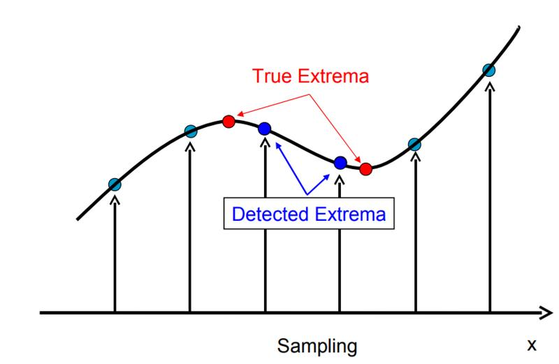

90、视频分析-对象移动轨迹绘制
C++
#include <opencv2/opencv.hpp>"
#include <iostream>
using namespace cv;
using namespace std;
Mat image;
bool selectObject = false;
int trackObject = 0;
bool showHist = true;
Point origin;
Rect selection;
int vmin = 10, vmax = 256, smin = 30;
int main(int argc, const char** argv)
{
// VideoCapture cap(0);
VideoCapture cap("D:/images/video/balltest.mp4");
Rect trackWindow;
int hsize = 16;
float hranges[] = { 0,180 };
const float* phranges = hranges;
if (!cap.isOpened())
{
printf("could not open camera...\n");
return -1;
}
namedWindow("Histogram", WINDOW_AUTOSIZE);
namedWindow("CamShift Demo", WINDOW_AUTOSIZE);
Mat frame, hsv, hue, mask, hist, histimg = Mat::zeros(200, 320, CV_8UC3), backproj;
bool paused = false;
cap.read(frame);
Rect selection = selectROI("CamShift Demo", frame, true, false);
vector<Point> tracking_path;
while (true)
{
bool ret = cap.read(frame);
if (!ret) break;
frame.copyTo(image);
cvtColor(image, hsv, COLOR_BGR2HSV);
int _vmin = vmin, _vmax = vmax;
inRange(hsv, Scalar(26, 43, 46), Scalar(34, 255, 255), mask);
int ch[] = { 0, 0 };
hue.create(hsv.size(), hsv.depth());
mixChannels(&hsv, 1, &hue, 1, ch, 1);
if (trackObject <= 0)
{
// Object has been selected by user, set up CAMShift search properties once
Mat roi(hue, selection), maskroi(mask, selection);
calcHist(&roi, 1, 0, maskroi, hist, 1, &hsize, &phranges);
normalize(hist, hist, 0, 255, NORM_MINMAX);
trackWindow = selection;
trackObject = 1; // Don't set up again, unless user selects new ROI
histimg = Scalar::all(0);
int binW = histimg.cols / hsize;
Mat buf(1, hsize, CV_8UC3);
for (int i = 0; i < hsize; i++)
buf.at<Vec3b>(i) = Vec3b(saturate_cast<uchar>(i*180. / hsize), 255, 255);
cvtColor(buf, buf, COLOR_HSV2BGR);
for (int i = 0; i < hsize; i++)
{
int val = saturate_cast<int>(hist.at<float>(i)*histimg.rows / 255);
rectangle(histimg, Point(i*binW, histimg.rows),
Point((i + 1)*binW, histimg.rows - val),
Scalar(buf.at<Vec3b>(i)), -1, 8);
}
}
// Perform CA-MeanShift
calcBackProject(&hue, 1, 0, hist, backproj, &phranges);
backproj &= mask;
RotatedRect trackBox = CamShift(backproj, trackWindow,
TermCriteria(TermCriteria::EPS | TermCriteria::COUNT, 10, 1));
if (trackBox.center.x>0 && trackBox.center.y>0)
tracking_path.push_back(trackBox.center);
ellipse(image, trackBox, Scalar(0, 0, 255), 3, LINE_AA);
for (int i = 1; i < tracking_path.size(); i++) {
line(image, tracking_path[i - 1], tracking_path[i], Scalar(255, 0, 0), 2, 8, 0);
}
imshow("CamShift Demo", image);
imshow("Histogram", histimg);
char c = (char)waitKey(50);
if (c == 27)
break;
}
return 0;
}
python
import cv2 as cv
import numpy as np
cap = cv.VideoCapture('D:/images/video/balltest.mp4')
# 读取第一帧
ret,frame = cap.read()
cv.namedWindow("CAM Demo", cv.WINDOW_AUTOSIZE)
# 选择ROI区域
x, y, w, h = cv.selectROI("CAM Demo", frame, True, False)
track_window = (x, y, w, h)
# 获取ROI直方图
roi = frame[y:y+h, x:x+w]
hsv_roi = cv.cvtColor(roi, cv.COLOR_BGR2HSV)
mask = cv.inRange(hsv_roi, (26, 43, 46), (34, 255, 255))
roi_hist = cv.calcHist([hsv_roi],[0],mask,[180],[0,180])
cv.normalize(roi_hist,roi_hist,0,255,cv.NORM_MINMAX)
# 设置搜索跟踪分析
term_crit = ( cv.TERM_CRITERIA_EPS | cv.TERM_CRITERIA_COUNT, 10, 1)
tracking_path = []
while True:
ret, frame = cap.read()
if ret is False:
break;
hsv = cv.cvtColor(frame, cv.COLOR_BGR2HSV)
dst = cv.calcBackProject([hsv],[0],roi_hist,[0,180],1)
# ，搜索更新roi区域， 保持运行轨迹
track_box = cv.CamShift(dst, track_window, term_crit)
track_window = track_box[1]
pt = np.int32(track_box[0][0])
if pt[0] > 0 and pt[1] > 0:
tracking_path.append(pt)
# 绘制跟踪对象位置窗口与对象运行轨迹
cv.ellipse(frame, track_box[0], (0, 0, 255), 3, 8)
for i in range(1, len(tracking_path), 1):
cv.line(frame, (tracking_path[i - 1][0], tracking_path[i - 1][1]),
(tracking_path[i][0], tracking_path[i][1]), (255, 0, 0), 2, 8, 0)
cv.imshow('CAM Demo',frame)
k = cv.waitKey(50) & 0xff
if k == 27:
break
else:
cv.imwrite(chr(k)+".jpg",frame)
cv.destroyAllWindows()
cap.release()
91、对象检测 – HAAR级联检测器使用
HAAR级联检测器，OpenCV中的HAAR级联检测器支持人脸检测、微笑、眼睛与嘴巴检测等，通过加载这些预先训练的HAAR模型数据可以实现相关的对象检测，
void cv::CascadeClassifier::detectMultiScale(
InputArray image,
std::vector< Rect > & objects,
double scaleFactor = 1.1,
int minNeighbors = 3,
int flags = 0,
Size minSize = Size(),
Size maxSize = Size()
)
各个参数解释如下:
- Image:输入图像
- Objects 人脸框
- ScaleFactor 放缩比率
- minNeighbors 表示最低相邻矩形框
- flags 标志项
- OpenCV3.x以后不用啦，
- minSize 可以检测的最小人脸
- maxSize 可以检测的最大人脸
#include <opencv2/opencv.hpp>
#include <iostream>
using namespace cv;
using namespace std;
CascadeClassifier faceDetector;
String haar_data_file = "/home/dc_ubuntu/DC_Workspace/EMA/Project/opencv4.0_project/opencv-4.1.0/data/haarcascades/haarcascade_frontalface_alt_tree.xml";
int main(int artc, char** argv) {
Mat frame, gray;
vector<Rect> faces;
VideoCapture capture(0);
faceDetector.load(haar_data_file);
namedWindow("frame", WINDOW_AUTOSIZE);
while (true) {
capture.read(frame);
cvtColor(frame, gray, COLOR_BGR2GRAY);
equalizeHist(gray, gray);
faceDetector.detectMultiScale(gray, faces, 1.2, 1, 0, Size(30, 30), Size(400, 400));
for (size_t t = 0; t < faces.size(); t++) {
rectangle(frame, faces[t], Scalar(0, 0, 255), 2, 8, 0);
}
char c = waitKey(10);
if (c == 27) {
break;
}
imshow("frame", frame);
}
waitKey(0);
return 0;
}
92、对象检测-HAAR特征介绍
对象检测-HAAR特征介绍 HAAR小波基函数，因为其满足对称性，对人脸这种生物对称性良好的对象特别适合用来做检测器，常见的Haar特征分为三类： 边缘特征、 线性特征、 中心特征和对角线特征， 不同特征可以进行多种组合，生成更加复杂的级联特征，特征模板内有白色和黑色两种矩形，并定义该模板的特征值为白色矩形像素和减去黑色矩形像素和，Haar特征值反映了图像的对比度与梯度变化。 OpenCV中HAAR特征计算是积分图技术，这个我们在前面也分享过啦，所以可以非常快速高效的开窗检测， HAAR级联检测器具备有如下特性：
- 高类间变异性 低类内变异性 局部强度差 不同尺度 计算效率高
import cv2 as cv
capture = cv.VideoCapture(0)
face_detector = cv.CascadeClassifier(cv.data.haarcascades + "haarcascade_frontalface_alt.xml")
smile_detector = cv.CascadeClassifier(cv.data.haarcascades + "haarcascade_smile.xml")
while True:
ret, image = capture.read()
if ret is True:
cv.imshow("frame", image)
faces = face_detector.detectMultiScale(image, scaleFactor=1.05, minNeighbors=3,
minSize=(30, 30), maxSize=(300, 300))
for x, y, width, height in faces:
cv.rectangle(image, (x, y), (x+width, y+height), (0, 0, 255), 2, cv.LINE_8, 0)
roi = image[y:y+height,x:x+width]
smiles = smile_detector.detectMultiScale(roi, scaleFactor=1.7, minNeighbors=3,
minSize=(15, 15), maxSize=(100, 100))
for sx, sy, sw, sh in smiles:
cv.rectangle(roi, (sx, sy), (sx + sw, sy + sh), (0, 255, 0), 1)
cv.imshow("faces", image)
c = cv.waitKey(50)
if c == 27:
break
else:
break
cv.destroyAllWindows()
93、对象检测-LBP特征介绍
局部二值模式(Local Binary Pattern)主要用来实现2D图像纹理分析。其基本思想是用每个像素跟它周围的像素相比较得到局部图像结构，假设中心像素值大于相邻像素值则则相邻像素点赋值为1，否则赋值为0，最终对每个像素点都会得到一个二进制八位的表示，比如11100111。假设3x3的窗口大小，这样对每个像素点来说组合得到的像素值的空间为[0~2^8]。这种结果称为图像的局部二值模式或者简写为了LBP。

#include <opencv2/opencv.hpp>
#include <iostream>
using namespace cv;
using namespace std;
CascadeClassifier faceDetector;
String haar_data_file = "/home/dc_ubuntu/DC_Workspace/EMA/Project/opencv4.0_project/opencv-4.1.0/data/lbpcascades/lbpcascade_frontalface_improved.xml";
int main(int artc, char** argv) {
Mat frame, gray;
vector<Rect> faces;
VideoCapture capture(0);
faceDetector.load(haar_data_file);
namedWindow("frame", WINDOW_AUTOSIZE);
while (true) {
capture.read(frame);
cvtColor(frame, gray, COLOR_BGR2GRAY);
equalizeHist(gray, gray);
faceDetector.detectMultiScale(gray, faces, 1.2, 1, 0, Size(30, 30), Size(400, 400));
for (size_t t = 0; t < faces.size(); t++) {
rectangle(frame, faces[t], Scalar(0, 0, 255), 2, 8, 0);
}
char c = waitKey(10);
if (c == 27) {
break;
}
imshow("frame", frame);
}
waitKey(0);
return 0;
}
94、ORB FAST特征关键点检测
ORB - (Oriented Fast and Rotated BRIEF)算法是基于FAST特征检测与BRIEF特征描述子匹配实现，相比BRIEF算法中依靠随机方式获取而值点对，ORB通过FAST方法，FAST方式寻找候选特征点方式是假设灰度图像像素点A周围的像素存在连续大于或者小于A的灰度值，选择任意一个像素点P，假设半径为3，周围16个像素表示 见图一！ 则像素点P被标记为候选特征点、通常N取值为9、12，上图N=9。 为了简化计算，我们可以只计算1、9、5、13四个点，至少其中三个点满足上述不等式条件，即可将P视为候选点。然后通过阈值进行最终的筛选即可得到ORB特征点
static Ptr<ORB> cv::ORB::create (
int nfeatures = 500,
float scaleFactor = 1.2f,
int nlevels = 8,
int edgeThreshold = 31,
int firstLevel = 0,
int WTA_K = 2,
ORB::ScoreType scoreType = ORB::HARRIS_SCORE,
int patchSize = 31,
int fastThreshold = 20
)
nfeatures 最终输出最大特征点数目
scaleFactor 金字塔上采样比率
nlevels 金字塔层数
edgeThreshold 边缘阈值
firstLevel= 0
WTA_K这个是跟BRIEF描述子用的
scoreType 对所有的特征点进行排名用的方法

#include <opencv2/opencv.hpp>
#include <iostream>
using namespace cv;
using namespace std;
int main(int argc, char** argv) {
Mat src = imread("/home/dc_ubuntu/DC_Workspace/EMA/Project/opencv4.0_project/learn_opencv/opencv_tutorial/data/images/test1.png");
auto orb_detector = ORB::create(1000);
vector<KeyPoint> kpts;
orb_detector->detect(src, kpts);
Mat result = src.clone();
drawKeypoints(src, kpts, result, Scalar::all(-1), DrawMatchesFlags::DEFAULT);
imshow("ORB-detector", result);
imwrite("./result.png", result);
waitKey(0);
return 0;
}
95、BRIEF特征描述子
BRIEF特征描述子 匹配 得到特征点数据之后，根据BRIEF算法就可以建立描述子。选择候选特征点周围SxS大小的像素块、随机选择n对像素点。其中P(x)是图像模糊处理之后的像素值，原因在于高斯模糊可以抑制噪声影响、提供特征点稳定性，在实际代码实现中通常用均值滤波替代高斯滤波以便利用积分图方式加速计算获得更好的性能表现。常见滤波时候使用3x3~9x9之间的卷积核。滤波之后，根据上述描述子的生成条件，得到描述子。 作者论文提到n的取值通常为128、256或者512。得到二进制方式的字符串描述子之后，匹配就可以通过XOR方式矩形，计算汉明距离。ORB特征提取跟纯BRIEF特征提取相比较，BRIEF方式采用随机点方式得最终描述子、而ORB通过FAST得到特征点然后得到描述子。
#include <opencv2/opencv.hpp>
#include <iostream>
using namespace cv;
using namespace std;
int main(int argc, char** argv) {
Mat box = imread("D:/images/box.png");
Mat box_in_sence = imread("D:/images/box_in_scene.png");
// 创建ORB
auto orb_detector = ORB::create();
vector<KeyPoint> kpts_01, kpts_02;
Mat descriptors1, descriptors2;
orb_detector->detectAndCompute(box, Mat(), kpts_01, descriptors1);
orb_detector->detectAndCompute(box_in_sence, Mat(), kpts_02, descriptors2);
// 定义描述子匹配 - 暴力匹配
Ptr<DescriptorMatcher> matcher = DescriptorMatcher::create(DescriptorMatcher::BRUTEFORCE);
std::vector< DMatch > matches;
matcher->match(descriptors1, descriptors2, matches);
// 绘制匹配
Mat img_matches;
drawMatches(box, kpts_01, box_in_sence, kpts_02, matches, img_matches);
imshow("ORB-Matches", img_matches);
imwrite("D:/result.png", img_matches);
waitKey(0);
return 0;
}
96、描述子匹配
图像特征检测首先会获取关键点，然后根据关键点周围像素ROI区域的大小，生成描述子，完整的描述子向量就表示了一张图像的特征，是图像特征数据，这种方式也被称为图像特征工程，即通过先验模型与合理计算得到图像特征数据的过程，有了特征数据我们就可以利用特征数据实现对象检测与对象识别，这个最简单一个方法就是特征匹配，Opencv 提供了两种图像特征匹配的算法
- 暴力匹配 -
FLANN匹配
其中FLANN是一种高效的数值或者字符串匹配算法，SIFT/SURF是基于浮点数的匹配，ORB是二值匹配，速度更快。对于FLANN匹配算法，当使用ORB匹配算法的时候，需要重新构造HASH。这个在C++的代码种做了演示。暴力匹配在Python代码种做了演示。对匹配之后的输出结果，根据距离进行排序，就会得到距离比较的匹配点，这个才是好的特征匹配。
#include <opencv2/opencv.hpp>
#include <iostream>
#include <math.h>
#define RATIO 0.4
using namespace cv;
using namespace std;
int main(int argc, char** argv) {
Mat box = imread("D:/images/box.png");
Mat scene = imread("D:/images/box_in_scene.png");
if (scene.empty()) {
printf("could not load image...\n");
return -1;
}
imshow("input image", scene);
vector<KeyPoint> keypoints_obj, keypoints_sence;
Mat descriptors_box, descriptors_sence;
Ptr<ORB> detector = ORB::create();
detector->detectAndCompute(scene, Mat(), keypoints_sence, descriptors_sence);
detector->detectAndCompute(box, Mat(), keypoints_obj, descriptors_box);
vector<DMatch> matches;
// 初始化flann匹配
// Ptr<FlannBasedMatcher> matcher = FlannBasedMatcher::create(); // default is bad, using local sensitive hash(LSH)
Ptr<DescriptorMatcher> matcher = makePtr<FlannBasedMatcher>(makePtr<flann::LshIndexParams>(12, 20, 2));
matcher->match(descriptors_box, descriptors_sence, matches);
// 发现匹配
vector<DMatch> goodMatches;
printf("total match points : %d\n", matches.size());
float maxdist = 0;
for (unsigned int i = 0; i < matches.size(); ++i) {
printf("dist : %.2f \n", matches[i].distance);
maxdist = max(maxdist, matches[i].distance);
}
for (unsigned int i = 0; i < matches.size(); ++i) {
if (matches[i].distance < maxdist*RATIO)
goodMatches.push_back(matches[i]);
}
Mat dst;
drawMatches(box, keypoints_obj, scene, keypoints_sence, goodMatches, dst);
imshow("output", dst);
waitKey(0);
return 0;
}
97、基于描述子匹配的已知对象定位
图像特征点检测、描述子生成以后，就可以通过OpenCV提供的描述子匹配算法，得到描述子直接的距离，距离越小的说明是匹配越好的，设定一个距离阈值，一般是最大匹配距离的1/5～1/4左右作为阈值，得到所有小于阈值的匹配点，作为输入，通过单应性矩阵，获得这两个点所在平面的变换关系H，根据H使用透视变换就可以根据输入的对象图像获得场景图像中对象位置，最终绘制位置即可。
#include <opencv2/opencv.hpp>
#include <iostream>
#include <math.h>
#define RATIO 0.4
using namespace cv;
using namespace std;
int main(int argc, char** argv) {
Mat box = imread("D:/images/box.png");
Mat scene = imread("D:/images/box_in_scene.png");
if (scene.empty()) {
printf("could not load image...\n");
return -1;
}
imshow("input image", scene);
vector<KeyPoint> keypoints_obj, keypoints_sence;
Mat descriptors_box, descriptors_sence;
Ptr<ORB> detector = ORB::create();
detector->detectAndCompute(scene, Mat(), keypoints_sence, descriptors_sence);
detector->detectAndCompute(box, Mat(), keypoints_obj, descriptors_box);
vector<DMatch> matches;
// 初始化flann匹配
// Ptr<FlannBasedMatcher> matcher = FlannBasedMatcher::create(); // default is bad, using local sensitive hash(LSH)
Ptr<DescriptorMatcher> matcher = makePtr<FlannBasedMatcher>(makePtr<flann::LshIndexParams>(12, 20, 2));
matcher->match(descriptors_box, descriptors_sence, matches);
// 发现匹配
vector<DMatch> goodMatches;
printf("total match points : %d\n", matches.size());
float maxdist = 0;
for (unsigned int i = 0; i < matches.size(); ++i) {
printf("dist : %.2f \n", matches[i].distance);
maxdist = max(maxdist, matches[i].distance);
}
for (unsigned int i = 0; i < matches.size(); ++i) {
if (matches[i].distance < maxdist*RATIO)
goodMatches.push_back(matches[i]);
}
Mat dst;
drawMatches(box, keypoints_obj, scene, keypoints_sence, goodMatches, dst);
imshow("output", dst);
//-- Localize the object
std::vector<Point2f> obj_pts;
std::vector<Point2f> scene_pts;
for (size_t i = 0; i < goodMatches.size(); i++)
{
//-- Get the keypoints from the good matches
obj_pts.push_back(keypoints_obj[goodMatches[i].queryIdx].pt);
scene_pts.push_back(keypoints_sence[goodMatches[i].trainIdx].pt);
}
Mat H = findHomography(obj_pts, scene_pts, RHO);
// 无法配准
// Mat H = findHomography(obj, scene, RANSAC);
//-- Get the corners from the image_1 ( the object to be "detected" )
std::vector<Point2f> obj_corners(4);
obj_corners[0] = Point(0, 0); obj_corners[1] = Point(box.cols, 0);
obj_corners[2] = Point(box.cols, box.rows); obj_corners[3] = Point(0, box.rows);
std::vector<Point2f> scene_corners(4);
perspectiveTransform(obj_corners, scene_corners, H);
//-- Draw lines between the corners (the mapped object in the scene - image_2 )
line(dst, scene_corners[0] + Point2f(box.cols, 0), scene_corners[1] + Point2f(box.cols, 0), Scalar(0, 255, 0), 4);
line(dst, scene_corners[1] + Point2f(box.cols, 0), scene_corners[2] + Point2f(box.cols, 0), Scalar(0, 255, 0), 4);
line(dst, scene_corners[2] + Point2f(box.cols, 0), scene_corners[3] + Point2f(box.cols, 0), Scalar(0, 255, 0), 4);
line(dst, scene_corners[3] + Point2f(box.cols, 0), scene_corners[0] + Point2f(box.cols, 0), Scalar(0, 255, 0), 4);
//-- Show detected matches
imshow("Good Matches & Object detection", dst);
imwrite("D:/result.png", dst);
waitKey(0);
waitKey(0);
return 0;
}
98、SIFT特征提取 – 关键点提取
SIFT特征提取是图像特征提取中最经典的一个算法，归纳起来SIFT特征提取主要有如下几步：
- 构建高斯多尺度金字塔 关键点查找/过滤与精准定位 窗口区域角度方向直方图 描述子生成
SIFT特征是非常稳定的图像特征，在图像搜索、特征匹配、图像分类检测等方面应用十分广泛，但是它的缺点也是非常明显，就是计算量比较大，很难实时，所以对一些实时要求比较高的常见SIFT算法还是无法适用。如今SIFT算法在深度学习特征提取与分类检测网络大行其道的背景下，已经越来越有鸡肋的感觉，但是它本身的算法知识还是很值得我们学习，对我们也有很多有益的启示，本质上SIFT算法是很多常见算法的组合与巧妙衔接，这个思路对我们自己处理问题可以带来很多有益的帮助。今天我们首先高清楚SIFT特征提取的前面两个步骤，尺度空间金字塔与关键点过滤。
OpenCV已经实现了SIFT算法，但是在OpenCV3.0之后因为专利授权问题，该算法在扩展模块xfeature2d中，需要自己编译才可以使用，OpenCV Python中从3.4.2之后扩展模块也无法使用，需要自己单独编译python SDK才可以使用。其使用方法与我们前面介绍的ORB完全一致。都是遵循下面的步骤
- 创建对象
- 通过detect方法提取对象关键点 . 同drawKeypoints绘制关键点
构建多尺度高斯金字塔 为了在每组图像中检测 S 个尺度的极值点，DoG 金字塔每组需 S+2 层图像，因为每组的第一层和最后一层图像上不能检测极值，DoG 金字塔由高斯金字塔相邻两层相减得到，则高斯金字塔每组最少需 S+3 层图像，实际计算时 S 通常在2到5之间。


99、SIFT特征提取 – 描述子生成
SIFT特征提取是图像特征提取中最经典的一个算法，归纳起来SIFT特征提取主要有如下几步：
- 构建高斯多尺度金字塔 关键点查找/过滤与精准定位 窗口区域角度方向直方图 描述子生成
前面我们已经详细解释了SIFT特征点是如何提取的，有了特征点之后，我们对特征点周围的像素块计算角度方向直方图，在计算直方图之前首先需要对图像进行梯度计算，这里可以使用SOBEL算子，然后根据dx与dy计算梯度和与角度
100、HOG特征与行人检测
HOG(Histogram of Oriented Gradient)特征在对象识别与模式匹配中是一种常见的特征提取算法，是基于本地像素块进行特征直方图提取的一种算法，对象局部的变形与光照影响有很好的稳定性，最初是用HOG特征来来识别人像，通过HOG特征提取+SVM训练，可以得到很好的效果，OpenCV已经有了。HOG特征提取的大致流程看第一张图
#include <opencv2/opencv.hpp>
#include <iostream>
using namespace cv;
using namespace std;
int main(int argc, char** argv) {
Mat src = imread("/home/dc_ubuntu/DC_Workspace/EMA/Project/opencv4.0_project/learn_opencv/opencv_tutorial/data/images/pedestrian.png");
if (src.empty()) {
printf("could not load image..\n");
return -1;
}
imshow("input", src);
HOGDescriptor *hog = new HOGDescriptor();
hog->setSVMDetector(hog->getDefaultPeopleDetector());
vector<Rect> objects;
hog->detectMultiScale(src, objects, 0.0, Size(4, 4), Size(8, 8), 1.25);
for (int i = 0; i < objects.size(); i++) {
rectangle(src, objects[i], Scalar(0, 0, 255), 2, 8, 0);
}
imshow("result", src);
waitKey(0);
return 0;
}
101、HOG特征描述子 – 多尺度检测
HOG(Histogram of Oriented Gradient)特征本身不支持旋转不变性，通过金字塔可以支持多尺度检测实现尺度空间不变性，OpenCV中支持HOG描述子多尺度检测的相关API如下：
virtual void cv::HOGDescriptor::detectMultiScale(
InputArray img,
std::vector< Rect > & foundLocations,
double hitThreshold = 0,
Size winStride = Size(),
Size padding = Size(),
double scale = 1.05,
double finalThreshold = 2.0,
bool useMeanshiftGrouping = false
)
Img表示输入图像
foundLocations表示发现对象矩形框
hitThreshold表示SVM距离度量，默认0表示，表示特征与SVM分类超平面之间
winStride表示窗口步长
padding表示填充
scale表示尺度空间
finalThreshold 最终阈值，默认为2.0
useMeanshiftGrouping 不建议使用，速度太慢拉
这个其中窗口步长与Scale对结果影响最大，特别是Scale，小的尺度变化有利于检出低分辨率对象，同事也会导致FP发生，高的可以避免FP但是会产生FN（有对象漏检）。窗口步长是一个或者多个block区域，关于Block区域可以看第一张图：
102、HOG特征描述子 – 提取描述子
对于HOG特征，我们可以通过预先训练的特征数据，进行多尺度的对象检测，OpenCV中基于HOG的行人检测是一个典型案例，同时我们还可以实现自定义对象的检测，这种自定义对象检测，可以分为两个部分，第一部分：通过提取样本的HOG描述子，生成样本的特征数据，第二部分通过SVM进行分类学习与训练，保存为模型。这样我们以后就可以通过模型来实现自定义对象检测啦。今天我们首先分享第一部分，提取HOG描述子。OpenCV中提取HOG描述子的API表示如下：
virtual void cv::HOGDescriptor::compute(
InputArray img,
std::vector< float > & descriptors,
Size winStride = Size(),
Size padding = Size(),
const std::vector< Point > & locations = std::vector< Point >()
)
输入图像大小WxH=72x128 默认的HOG描述子窗口大小为64x128，窗口移动的步长8x8 对于每个窗口内部，每个Cell大小是8x8的，所以窗口可以划分为8x16的Cells大小 对于每个Block区域来说，每次移动步长是一个Cell，8x16Cells可以得到总数7x15个Block 每个Block都是4个Cell, 36个向量，所以对于输入图像得到： 7x15x36x2 = 7560个特征描述子，这些描述子可以作为浮点数特征数据，对于需要输入的样本图像来说，需要首先执行以下预处理，把图像大小resize为跟窗口大小一致或者把窗口resize跟图像大小一致，这样有利于下一步处理。
#include <opencv2/opencv.hpp>
#include <iostream>
using namespace cv;
using namespace std;
int main(int argc, char** argv) {
Mat src = imread("/home/dc_ubuntu/DC_Workspace/EMA/Project/opencv4.0_project/learn_opencv/opencv_tutorial/data/images/gaoyy_min.png");
if (src.empty()) {
printf("could not load image..\n");
return -1;
}
imshow("input", src);
HOGDescriptor hog;
vector<float> features;
hog.compute(src, features, Size(8, 8), Size(0, 0));
printf("feature sum size :%d \n", features.size());
for (int i = 0; i < features.size(); i++) {
printf("v: %.2f\n ", features[i]);
}
imshow("result", src);
waitKey(0);
return 0;
}
103、HOG特征描述子 – 使用描述子特征生成样本数据
对于HOG特征，我们可以通过预先训练的特征数据，进行多尺度的对象检测，OpenCV中基于HOG的行人检测是一个典型案例，同时我们还可以实现自定义对象的检测，这种自定义对象检测，可以分为两个部分，第一部分：通过提取样本的HOG描述子，生成样本的特征数据，第二部分通过SVM进行分类学习与训练，保存为模型。这样我们以后就可以通过模型来实现自定义对象检测啦。今天我们分享第一部分，使用HOG描述子特征数据生成数据集，进行SVM分类训练，实现对象分类识别。 这里我已一个很常见的应用，电表检测为例，这类问题早期主要通过特征匹配实现，但是这个方法比较容易受到各种因素干扰，不是很好，通过提取HOG特征、进行SVM特征分类、然后开窗检测，是一个很好的解决方法。 在OpenCV中训练SVM模型，其数据格式常见的是“行模式”就是一行（多列向量）是一个样本，对应一个整数标签(label)。这里采用默认的窗口大小为64x128 提取HOG特征向量，得到的每个样本的向量数目等于7x15x36=3780，有多少个样本就有多少行， 对于的标签是每一行对应自己的标签，有多少个训练样本，标签就有多少行！
#include <opencv2/opencv.hpp>
#include <iostream>
using namespace cv;
using namespace cv::ml;
using namespace std;
string positive_dir = "/home/dc_ubuntu/DC_Workspace/EMA/Project/opencv4.0_project/learn_opencv/opencv_tutorial_complete/opencv_tutorial/data/dataset/elec_watch/positive/";
string negative_dir = "/home/dc_ubuntu/DC_Workspace/EMA/Project/opencv4.0_project/learn_opencv/opencv_tutorial_complete/opencv_tutorial/data/dataset/elec_watch/negative/";
void get_hog_descripor(Mat &image, vector<float> &desc);
void generate_dataset(Mat &trainData, Mat &labels);
int main(int argc, char** argv) {
Mat trainData = Mat::zeros(Size(3780, 26), CV_32FC1);
Mat labels = Mat::zeros(Size(1, 26), CV_32SC1);
generate_dataset(trainData, labels);
waitKey(0);
return 0;
}
void get_hog_descripor(Mat &image, vector<float> &desc) {
HOGDescriptor hog;
int h = image.rows;
int w = image.cols;
float rate = 64.0 / w;
Mat img, gray;
resize(image, img, Size(64, int(rate*h)));
cvtColor(img, gray, COLOR_BGR2GRAY);
Mat result = Mat::zeros(Size(64, 128), CV_8UC1);
result = Scalar(127);
Rect roi;
roi.x = 0;
roi.width = 64;
roi.y = (128 - gray.rows) / 2;
roi.height = gray.rows;
gray.copyTo(result(roi));
hog.compute(result, desc, Size(8, 8), Size(0, 0));
}
void generate_dataset(Mat &trainData, Mat &labels) {
vector<string> images;
glob(positive_dir, images);
int pos_num = images.size();
for (int i = 0; i < images.size(); i++) {
Mat image = imread(images[i].c_str());
vector<float> fv;
imshow("image", image);
waitKey(0);
get_hog_descripor(image, fv);
printf("image path : %s, feature data length: %d \n", images[i].c_str(), fv.size());
for (int j = 0; j < fv.size(); j++) {
trainData.at<float>(i, j) = fv[j];
}
labels.at<int>(i, 0) = 1;
}
images.clear();
glob(negative_dir, images);
for (int i = 0; i < images.size(); i++) {
Mat image = imread(images[i].c_str());
vector<float> fv;
imshow("image", image);
waitKey(0);
get_hog_descripor(image, fv);
printf("image path : %s, feature data length: %d \n", images[i].c_str(), fv.size());
for (int j = 0; j < fv.size(); j++) {
trainData.at<float>(i+pos_num, j) = fv[j];
}
labels.at<int>(i+ pos_num, 0) = -1;
}
}
104、线性SVM
对于得到的结构化HOG特征数据，我们就可以通过初始化SVM进行回归分类训练，这里采用的训练器是SVM线性分类器，SVM还有另外一个分类器就是对于线性不可分数据的径向分类器。OpenCV中使用径向分类器SVM有时候会训练很长时间，而且结果很糟糕，甚至会报一些莫名其妙的错误，感觉不是特别好。所以推荐大家真对线性不可分的问题可以选择神经网络ANN模块。 在训练之前，首先简单的认识一下SVM，我们这边是通过二分类来完成，是很典型的线性可分离的SVM。
对线性可分的选择用SVM，通过很少的样本学习就会取得很好的效果。OpenCV中SVM训练的API如下：
virtual bool cv::ml::StatModel::train(
InputArray samples,
int layout,
InputArray responses
)
Sample表示训练样本数据/HOG特征数据
Layout 有两种组织方式ROW_SAMPLE与COL_SAMPLE
Responses 每个输入样本的标签
对于训练好的数据我们可以通过save方法进行保存，只要提供一个保存路径即可
#include <opencv2/opencv.hpp>
#include <iostream>
using namespace cv;
using namespace cv::ml;
using namespace std;
string positive_dir = "/home/dc_ubuntu/DC_Workspace/EMA/Project/opencv4.0_project/learn_opencv/opencv_tutorial_complete/opencv_tutorial/data/dataset/elec_watch/positive/";
string negative_dir = "/home/dc_ubuntu/DC_Workspace/EMA/Project/opencv4.0_project/learn_opencv/opencv_tutorial_complete/opencv_tutorial/data/dataset/elec_watch/negative/";
void get_hog_descripor(Mat &image, vector<float> &desc);
void generate_dataset(Mat &trainData, Mat &labels);
void svm_train(Mat &trainData, Mat &labels);
int main(int argc, char** argv) {
Mat trainData = Mat::zeros(Size(3780, 26), CV_32FC1);
Mat labels = Mat::zeros(Size(1, 26), CV_32SC1);
generate_dataset(trainData, labels);
svm_train(trainData, labels);
Ptr<SVM> svm = SVM::load("./hog_elec.yml");
Mat test_img = imread("/home/dc_ubuntu/DC_Workspace/EMA/Project/opencv4.0_project/learn_opencv/opencv_tutorial_complete/opencv_tutorial/data/dataset/elec_watch/test/scene_05.jpg");
// Mat test_img = imread("D:/images/train_data/elec_watch/positive/box_01.bmp");
imshow("test image", test_img);
vector<float> fv;
get_hog_descripor(test_img, fv);
Mat one_row = Mat::zeros(Size(fv.size(), 1), CV_32FC1);
for (int i = 0; i < fv.size(); i++) {
one_row.at<float>(0, i) = fv[i];
}
float result = svm->predict(one_row);
printf("\n prediction result : %.2f \n", result);
waitKey(0);
return 0;
}
void svm_train(Mat &trainData, Mat &labels) {
printf("\n start SVM training... \n");
Ptr< SVM > svm = SVM::create();
/* Default values to train SVM */
svm->setGamma(5.383);
svm->setKernel(SVM::LINEAR);
svm->setC(2.67);
svm->setType(SVM::C_SVC);
svm->train(trainData, ROW_SAMPLE, labels);
clog << "...[done]" << endl;
// save xml
svm->save("./hog_elec.yml");
}
void get_hog_descripor(Mat &image, vector<float> &desc) {
HOGDescriptor hog;
int h = image.rows;
int w = image.cols;
float rate = 64.0 / w;
Mat img, gray;
resize(image, img, Size(64, int(rate*h)));
cvtColor(img, gray, COLOR_BGR2GRAY);
Mat result = Mat::zeros(Size(64, 128), CV_8UC1);
result = Scalar(127);
Rect roi;
roi.x = 0;
roi.width = 64;
roi.y = (128 - gray.rows) / 2;
roi.height = gray.rows;
gray.copyTo(result(roi));
hog.compute(result, desc, Size(8, 8), Size(0, 0));
}
void generate_dataset(Mat &trainData, Mat &labels) {
vector<string> images;
glob(positive_dir, images);
int pos_num = images.size();
for (int i = 0; i < images.size(); i++) {
Mat image = imread(images[i].c_str());
vector<float> fv;
get_hog_descripor(image, fv);
printf("image path : %s, feature data length: %d \n", images[i].c_str(), fv.size());
for (int j = 0; j < fv.size(); j++) {
trainData.at<float>(i, j) = fv[j];
}
labels.at<int>(i, 0) = 1;
}
images.clear();
glob(negative_dir, images);
for (int i = 0; i < images.size(); i++) {
Mat image = imread(images[i].c_str());
vector<float> fv;
get_hog_descripor(image, fv);
printf("image path : %s, feature data length: %d \n", images[i].c_str(), fv.size());
for (int j = 0; j < fv.size(); j++) {
trainData.at<float>(i + pos_num, j) = fv[j];
}
labels.at<int>(i + pos_num, 0) = -1;
}
}
105、HOG特征描述子 – 使用HOG进行对象检测
对于已经训练好的HOG+SVM的模型，我们可以通过开窗实现对象检测，从而完成自定义对象检测。以电表检测为例，这样我们就实现HOG+SVM对象检测全流程。OpenCV中实现对每个窗口像素块预测，需要首先加载SVM模型文件，然后使用predict方法实现预测。这种方法的缺点就是开窗检测是从左到右、从上到下，是一个高耗时的操作，所以步长选择一般会选择HOG窗口默认步长的一半，这样可以减少检测框的数目，同时在predict时候会发现多个重复框，求取它们的平均值即可得到最终的检测框
#include <opencv2/opencv.hpp>
#include <iostream>
using namespace cv;
using namespace cv::ml;
using namespace std;
string positive_dir = "D:/images/train_data/elec_watch/positive/";
string negative_dir = "D:/images/train_data/elec_watch/negative/";
void get_hog_descripor(Mat &image, vector<float> &desc);
void generate_dataset(Mat &trainData, Mat &labels);
void svm_train(Mat &trainData, Mat &labels);
vector< float > get_svm_detector(const Ptr< SVM >& svm);
int main(int argc, char** argv) {
/*
Mat trainData = Mat::zeros(Size(3780, 26), CV_32FC1);
Mat labels = Mat::zeros(Size(1, 26), CV_32SC1);
generate_dataset(trainData, labels);
svm_train(trainData, labels);
*/
Ptr<SVM> svm = SVM::load("D:/vcworkspaces/hog_elec.yml");
Mat test = imread("D:/images/train_data/elec_watch/test/scene_08.jpg");
resize(test, test, Size(0, 0), 0.20, 0.20);
imshow("input", test);
Rect winRect;
winRect.width = 64;
winRect.height = 128;
int sum_x = 0;
int sum_y = 0;
int count = 0;
for (int row = 64; row < test.rows - 64; row+=4) {
for (int col = 32; col < test.cols-32; col += 4) {
winRect.x = col-32;
winRect.y = row - 64;
vector<float> fv;
get_hog_descripor(test(winRect), fv);
Mat one_row = Mat::zeros(Size(fv.size(), 1), CV_32FC1);
for (int i = 0; i < fv.size(); i++) {
one_row.at<float>(0, i) = fv[i];
}
float result = svm->predict(one_row);
if (result > 0) {
// rectangle(test, winRect, Scalar(0, 0, 255), 1, 8, 0);
sum_x += winRect.x;
sum_y += winRect.y;
count++;
}
}
}
winRect.x = sum_x / count;
winRect.y = sum_y / count;
rectangle(test, winRect, Scalar(255, 0, 0), 1, 8, 0);
imshow("result", test);
waitKey(0);
return 0;
}
vector< float > get_svm_detector(const Ptr< SVM >& svm)
{
// get the support vectors
Mat sv = svm->getSupportVectors();
const int sv_total = sv.rows;
// get the decision function
Mat alpha, svidx;
double rho = svm->getDecisionFunction(0, alpha, svidx);
CV_Assert(alpha.total() == 1 && svidx.total() == 1 && sv_total == 1);
CV_Assert((alpha.type() == CV_64F && alpha.at<double>(0) == 1.) ||
(alpha.type() == CV_32F && alpha.at<float>(0) == 1.f));
CV_Assert(sv.type() == CV_32F);
vector< float > hog_detector(sv.cols + 1);
memcpy(&hog_detector[0], sv.ptr(), sv.cols * sizeof(hog_detector[0]));
hog_detector[sv.cols] = (float)-rho;
return hog_detector;
}
void svm_train(Mat &trainData, Mat &labels) {
printf("\n start SVM training... \n");
Ptr< SVM > svm = SVM::create();
/* Default values to train SVM */
svm->setGamma(5.383);
svm->setKernel(SVM::LINEAR);
svm->setC(2.67);
svm->setType(SVM::C_SVC);
svm->train(trainData, ROW_SAMPLE, labels);
clog << "...[done]" << endl;
// save xml
svm->save("D:/vcworkspaces/hog_elec.yml");
}
void get_hog_descripor(Mat &image, vector<float> &desc) {
HOGDescriptor hog;
int h = image.rows;
int w = image.cols;
float rate = 64.0 / w;
Mat img, gray;
resize(image, img, Size(64, int(rate*h)));
cvtColor(img, gray, COLOR_BGR2GRAY);
Mat result = Mat::zeros(Size(64, 128), CV_8UC1);
result = Scalar(127);
Rect roi;
roi.x = 0;
roi.width = 64;
roi.y = (128 - gray.rows) / 2;
roi.height = gray.rows;
gray.copyTo(result(roi));
hog.compute(result, desc, Size(8, 8), Size(0, 0));
}
void generate_dataset(Mat &trainData, Mat &labels) {
vector<string> images;
glob(positive_dir, images);
int pos_num = images.size();
for (int i = 0; i < images.size(); i++) {
Mat image = imread(images[i].c_str());
vector<float> fv;
get_hog_descripor(image, fv);
printf("image path : %s, feature data length: %d \n", images[i].c_str(), fv.size());
for (int j = 0; j < fv.size(); j++) {
trainData.at<float>(i, j) = fv[j];
}
labels.at<int>(i, 0) = 1;
}
images.clear();
glob(negative_dir, images);
for (int i = 0; i < images.size(); i++) {
Mat image = imread(images[i].c_str());
vector<float> fv;
get_hog_descripor(image, fv);
printf("image path : %s, feature data length: %d \n", images[i].c_str(), fv.size());
for (int j = 0; j < fv.size(); j++) {
trainData.at<float>(i + pos_num, j) = fv[j];
}
labels.at<int>(i + pos_num, 0) = -1;
}
}
106、AKAZE特征与描述子
AKAZE特征提取算法是局部特征描述子算法，可以看成是SIFT算法的改进、采用非线性扩散滤波迭代来提取与构建尺度空间、采用与SIFT类似的方法寻找特征点、在描述子生成阶段采用ORB类似的方法生成描述子，但是描述子比ORB多了旋转不变性特征。ORB采用LDB方法，AKAZE采用 M-LDB
#include <opencv2/opencv.hpp>
#include <iostream>
using namespace cv;
using namespace std;
int main(int argc, char** argv) {
Mat box = imread("D:/images/box.png");
Mat box_in_sence = imread("D:/images/box_in_scene.png");
// 创建AKAZE
auto akaze_detector = AKAZE::create();
vector<KeyPoint> kpts_01, kpts_02;
Mat descriptors1, descriptors2;
akaze_detector->detectAndCompute(box, Mat(), kpts_01, descriptors1);
akaze_detector->detectAndCompute(box_in_sence, Mat(), kpts_02, descriptors2);
// 定义描述子匹配 - 暴力匹配
Ptr<DescriptorMatcher> matcher = DescriptorMatcher::create(DescriptorMatcher::BRUTEFORCE);
std::vector< DMatch > matches;
matcher->match(descriptors1, descriptors2, matches);
// 绘制匹配
Mat img_matches;
drawMatches(box, kpts_01, box_in_sence, kpts_02, matches, img_matches);
imshow("AKAZE-Matches", img_matches);
imwrite("D:/result.png", img_matches);
waitKey(0);
return 0;
}
17、Brisk特征提取与描述子匹配
Brisk特征提取与描述子匹配 BRISK(Binary robust invariant scalable keypoints)是一种基于尺度空间不变性类似ORB特征描述子的特征提取算法。BRISK主要步骤可以分为如下两步：
- 构建尺度空间金字塔实现关键点定位 . 根据关键点生成描述子
#include <opencv2/opencv.hpp>
#include <iostream>
using namespace cv;
using namespace std;
int main(int argc, char** argv) {
Mat box = imread("D:/images/box.png");
Mat box_in_sence = imread("D:/images/box_in_scene.png");
// 创建BRISK
auto brisk_detector = BRISK::create();
vector<KeyPoint> kpts_01, kpts_02;
Mat descriptors1, descriptors2;
brisk_detector->detectAndCompute(box, Mat(), kpts_01, descriptors1);
brisk_detector->detectAndCompute(box_in_sence, Mat(), kpts_02, descriptors2);
// 定义描述子匹配 - 暴力匹配
Ptr<DescriptorMatcher> matcher = DescriptorMatcher::create(DescriptorMatcher::BRUTEFORCE);
std::vector< DMatch > matches;
matcher->match(descriptors1, descriptors2, matches);
// 绘制匹配
Mat img_matches;
drawMatches(box, kpts_01, box_in_sence, kpts_02, matches, img_matches);
imshow("AKAZE-Matches", img_matches);
imwrite("D:/result.png", img_matches);
waitKey(0);
return 0;
}
18、特征提取之关键点检测 - GFTTDetector
该方法是基于shi-tomas角点检测变化而来的一种特征提取方法，OpenCV创建该检测器的API与goodfeaturetotrack的API参数极其类似：
Ptr<GFTTDetector> cv::GFTTDetector::create(
int maxCorners = 1000,
double qualityLevel = 0.01,
double minDistance = 1,
int blockSize = 3,
bool useHarrisDetector = false,
double k = 0.04
)
#include <opencv2/opencv.hpp>
#include <iostream>
using namespace cv;
using namespace std;
int main(int argc, char** argv) {
Mat src = imread("D:/images/test1.png");
auto keypoint_detector = GFTTDetector::create(1000, 0.01, 1.0, 3, false, 0.04);
vector<KeyPoint> kpts;
keypoint_detector->detect(src, kpts);
Mat result = src.clone();
drawKeypoints(src, kpts, result, Scalar::all(-1), DrawMatchesFlags::DEFAULT);
imshow("GFTT-Keypoint-Detect", result);
imwrite("D:/result.png", result);
waitKey(0);
return 0;
}
109、BLOB特征分析 – simpleblobdetector使用
BLOB是图像中灰度块的一种专业称呼，更加变通一点的可以说它跟我们前面二值图像分析的联通组件类似，通过特征提取中的SimpleBlobDetector可以实现常见的各种灰度BLOB对象组件检测与分离。使用该检测器的时候，可以根据需要输入不同参数，得到的结果跟输入的参数息息相关。常见的BLOB分析支持如下： - 根据BLOB面积过滤 - 根据灰度/颜色值过滤 - 根据圆度过滤 - 根据长轴与短轴过滤 - 根据凹凸进行过滤 参数列表！
SimpleBlobDetector::Params::Params()
bool filterByArea
bool filterByCircularity
bool filterByColor
bool filterByConvexity
bool filterByInertia
float maxArea
float maxCircularity
float maxConvexity
float maxInertiaRatio
float maxThreshold
float minArea
float minCircularity
float minConvexity
float minDistBetweenBlobs
float minInertiaRatio
110、KMeans 数据分类
K-Means算法的作者是MacQueen， K-Means的算法是对数据进行分类的算法，采用的硬分类方式，是属于非监督学习的算法，预先要求知道分为几个类别，然后每个类别有一个中心点，根据距离度量来决定每个数据点属于哪个类别标签，一次循环实现对所有数据点分类之后，会根据标签重新计算各个类型的中心位置，然后继续循环数据集再次分类标签样本数据，如此不断迭代，直到指定的循环数目或者前后两次delta小于指定阈值，停止计算，得到最终各个样本数据的标签。
OpenCV中KMeans数据分类的API为：
double cv::kmeans(
InputArray data,
int K,
InputOutputArray bestLabels,
TermCriteria criteria,
int attempts,
int flags,
OutputArray centers = noArray()
)
data表示输入的样本数据，必须是按行组织样本，每一行为一个样本数据，列表示样本的维度
K表示最终的分类数目
bestLabels 表示最终分类每个样本的标签
criteria 表示KMeans分割的停止条件
attempts 表示采样不同初始化标签尝试次数
flag表示中心初始化方法
- KMEANS_RANDOM_CENTERS
- KMEANS_PP_CENTERS
- KMEANS_USE_INITIAL_LABELS
centers表示最终分割以后的每个cluster的中心位置
#include <opencv2/opencv.hpp>
#include <iostream>
using namespace cv;
using namespace std;
int main(int argc, char** argv) {
Mat img(500, 500, CV_8UC3);
RNG rng(12345);
Scalar colorTab[] = {
Scalar(0, 0, 255),
Scalar(255, 0, 0),
};
int numCluster = 2;
int sampleCount = rng.uniform(5, 500);
Mat points(sampleCount, 1, CV_32FC2);
// 生成随机数
for (int k = 0; k < numCluster; k++) {
Point center;
center.x = rng.uniform(0, img.cols);
center.y = rng.uniform(0, img.rows);
Mat pointChunk = points.rowRange(k*sampleCount / numCluster,
k == numCluster - 1 ? sampleCount : (k + 1)*sampleCount / numCluster);
rng.fill(pointChunk, RNG::NORMAL, Scalar(center.x, center.y), Scalar(img.cols*0.05, img.rows*0.05));
}
randShuffle(points, 1, &rng);
// 使用KMeans
Mat labels;
Mat centers;
kmeans(points, numCluster, labels, TermCriteria(TermCriteria::EPS + TermCriteria::COUNT, 10, 0.1), 3, KMEANS_PP_CENTERS, centers);
// 用不同颜色显示分类
img = Scalar::all(255);
for (int i = 0; i < sampleCount; i++) {
int index = labels.at<int>(i);
Point p = points.at<Point2f>(i);
circle(img, p, 2, colorTab[index], -1, 8);
}
// 每个聚类的中心来绘制圆
for (int i = 0; i < centers.rows; i++) {
int x = centers.at<float>(i, 0);
int y = centers.at<float>(i, 1);
printf("c.x= %d, c.y=%d", x, y);
circle(img, Point(x, y), 40, colorTab[i], 1, LINE_AA);
}
imshow("KMeans-Data-Demo", img);
waitKey(0);
return 0;
}
111、KMeans 图像分割
KMean不光可以对数据进行分类，还可以实现对图像分割，什么图像分割，简单的说就要图像的各种像素值，分割为几个指定类别颜色值，这种分割有两个应用，一个可以实现图像主色彩的简单提取，另外针对特定的应用场景可以实现证件照片的背景替换效果，这个方面早期最好的例子就是证件之星上面的背景替换。当然要想实现类似的效果，绝对不是简单的KMeans就可以做到的，还有一系列后续的交互操作需要完成。对图像数据来说，要把每个像素点作为单独的样本，按行组织，只需要调用OpenCV的Mat中函数reshape即可实现
Mat cv::Mat::reshape(
int cn,
int rows = 0
)const
cn参数表示通道数
rows表示改为多少行
#include <opencv2/opencv.hpp>
#include <iostream>
using namespace cv;
using namespace std;
int main(int argc, char** argv) {
Mat src = imread("/home/dc_ubuntu/DC_Workspace/EMA/Project/opencv4.0_project/learn_opencv/opencv_tutorial_complete/opencv_tutorial/data/images/toux.jpg");
if (src.empty()) {
printf("could not load image...\n");
return -1;
}
namedWindow("input image", WINDOW_AUTOSIZE);
imshow("input image", src);
Scalar colorTab[] = {
Scalar(0, 0, 255),
Scalar(0, 255, 0),
Scalar(255, 0, 0),
Scalar(0, 255, 255),
Scalar(255, 0, 255)
};
int width = src.cols;
int height = src.rows;
int dims = src.channels();
// 初始化定义
int sampleCount = width*height;
int clusterCount = 3;
Mat labels;
Mat centers;
// RGB 数据转换到样本数据
Mat sample_data = src.reshape(3, sampleCount);
Mat data;
sample_data.convertTo(data, CV_32F);
// 运行K-Means
TermCriteria criteria = TermCriteria(TermCriteria::EPS + TermCriteria::COUNT, 10, 0.1);
kmeans(data, clusterCount, labels, criteria, clusterCount, KMEANS_PP_CENTERS, centers);
// 显示图像分割结果
int index = 0;
Mat result = Mat::zeros(src.size(), src.type());
for (int row = 0; row < height; row++) {
for (int col = 0; col < width; col++) {
index = row*width + col;
int label = labels.at<int>(index, 0);
result.at<Vec3b>(row, col)[0] = colorTab[label][0];
result.at<Vec3b>(row, col)[1] = colorTab[label][1];
result.at<Vec3b>(row, col)[2] = colorTab[label][2];
}
}
imshow("KMeans-image-Demo", result);
waitKey(0);
return 0;
}
112、KMeans 图像分割 – 背景替换
KMeans可以实现简单的证件照片的背景分割提取与替换，大致可以分为如下几步实现
- 读入图像建立KMenas样本 . 使用KMeans图像分割，指定指定分类数目 . 取左上角的label得到背景cluster index . 生成mask区域，然后高斯模糊进行背景替换
#include <opencv2/opencv.hpp>
#include <iostream>
using namespace cv;
using namespace std;
int main(int argc, char** argv) {
Mat src = imread("/home/dc_ubuntu/DC_Workspace/EMA/Project/opencv4.0_project/learn_opencv/opencv_tutorial_complete/opencv_tutorial/data/images/toux.jpg");
if (src.empty()) {
printf("could not load image...\n");
return -1;
}
namedWindow("input image", WINDOW_AUTOSIZE);
imshow("input image", src);
int width = src.cols;
int height = src.rows;
int dims = src.channels();
// 初始化定义
int sampleCount = width*height;
int clusterCount = 3;
Mat labels;
Mat centers;
// RGB 数据转换到样本数据
Mat sample_data = src.reshape(3, sampleCount);
Mat data;
sample_data.convertTo(data, CV_32F);
// 运行K-Means
TermCriteria criteria = TermCriteria(TermCriteria::EPS + TermCriteria::COUNT, 10, 0.1);
kmeans(data, clusterCount, labels, criteria, clusterCount, KMEANS_PP_CENTERS, centers);
Mat mask = Mat::zeros(src.size(), CV_8UC1);
int index = labels.at<int>(0, 0);
labels = labels.reshape(1, height);
for (int row = 0; row < height; row++) {
for (int col = 0; col < width; col++) {
int c = labels.at<int>(row, col);
if (c == index) {
mask.at<uchar>(row, col) = 255;
}
}
}
Mat se = getStructuringElement(MORPH_RECT, Size(3, 3), Point(-1, -1));
dilate(mask, mask, se);
GaussianBlur(mask, mask, Size(5, 5), 0);
Mat result = Mat::zeros(src.size(), CV_8UC3);
for (int row = 0; row < height; row++) {
for (int col = 0; col < width; col++) {
float w1 = mask.at<uchar>(row, col) / 255.0;
Vec3b bgr = src.at<Vec3b>(row, col);
bgr[0] = w1 * 255.0 + bgr[0] * (1.0 - w1);
bgr[1] = w1 * 0 + bgr[1] * (1.0 - w1);
bgr[2] = w1 * 255.0 + bgr[2] * (1.0 - w1);
result.at<Vec3b>(row, col) = bgr;
}
}
imshow("KMeans-image-Demo", result);
waitKey(0);
return 0;
}
113、KMeans 图像分割 – 主色彩提取
KMeans 图像分割 – 主色彩提取 KMeans分割会计算出每个聚类的像素平均值，根据这个可以得到图像的主色彩RGB分布成分多少，得到各种色彩在图像中的比重，绘制出图像对应的取色卡！这个方面在纺织与填色方面特别有用！主要步骤显示如下：
- 读入图像建立KMenas样本 . 使用KMeans图像分割，指定分类数目 . 统计各个聚类占总像素比率，根据比率建立色卡！
#include <opencv2/opencv.hpp>
#include <iostream>
using namespace cv;
using namespace std;
int main(int argc, char** argv) {
Mat src = imread("/home/dc_ubuntu/DC_Workspace/EMA/Project/opencv4.0_project/learn_opencv/opencv_tutorial/data/images/master.jpg");
if (src.empty()) {
printf("could not load image...\n");
return -1;
}
namedWindow("input image", WINDOW_AUTOSIZE);
imshow("input image", src);
int width = src.cols;
int height = src.rows;
int dims = src.channels();
// 初始化定义
int sampleCount = width*height;
int clusterCount = 4;
Mat labels;
Mat centers;
// RGB 数据转换到样本数据
Mat sample_data = src.reshape(3, sampleCount);
Mat data;
sample_data.convertTo(data, CV_32F);
// 运行K-Means
TermCriteria criteria = TermCriteria(TermCriteria::EPS + TermCriteria::COUNT, 10, 0.1);
kmeans(data, clusterCount, labels, criteria, clusterCount, KMEANS_PP_CENTERS, centers);
Mat card = Mat::zeros(Size(width, 50), CV_8UC3);
vector<float> clusters(clusterCount);
for (int i = 0; i < labels.rows; i++) {
clusters[labels.at<int>(i, 0)]++;
}
for (int i = 0; i < clusters.size(); i++) {
clusters[i] = clusters[i] / sampleCount;
}
int x_offset = 0;
for (int x = 0; x < clusterCount; x++) {
Rect rect;
rect.x = x_offset;
rect.y = 0;
rect.height = 50;
rect.width = round(clusters[x] * width);
x_offset += rect.width;
int b = centers.at<float>(x, 0);
int g = centers.at<float>(x, 1);
int r = centers.at<float>(x, 2);
rectangle(card, rect, Scalar(b, g, r), -1, 8, 0);
}
imshow("Image Color Card", card);
waitKey(0);
return 0;
}
114、KNN算法介绍
OpenCV中机器学习模块的最近邻算法KNN， 使用KNN算法实现手写数字识别，OpenCV在sample/data中有一张自带的手写数字数据集图像，0~9 每个有500个样本，总计有5000个数字。图像大小为1000x2000的大小图像，分割为20x20大小的单个数字图像，每个样本400个像素。然后使用KNN相关API实现训练与结果的保存。大致的顺序如下：
- 读入测试图像digit.png . 构建样本数据与标签 . 创建KNN训练并保存训练结果
OpenCV中KNN创建的API如下： Ptr<KNearest> knn = KNearest::create();
#include <opencv2/opencv.hpp>
#include <iostream>
using namespace cv;
using namespace cv::ml;
using namespace std;
int main(int argc, char** argv) {
Mat data = imread("/home/dc_ubuntu/DC_Workspace/EMA/Project/opencv4.0_project/learn_opencv/opencv_tutorial_complete/opencv_tutorial/data/images/digits.png");
Mat gray;
cvtColor(data, gray, COLOR_BGR2GRAY);
Mat images = Mat::zeros(5000, 400, CV_8UC1);
Mat labels = Mat::zeros(5000, 1, CV_8UC1);
Rect rect;
rect.height = 20;
rect.width = 20;
int index = 0;
Rect roi;
roi.x = 0;
roi.height = 1;
roi.width = 400;
for (int row = 0; row < 50; row++) {
int label = row / 5;
for (int col = 0; col < 100; col++) {
Mat digit = Mat::zeros(20, 20, CV_8UC1);
index = row * 100 + col;
rect.x = col * 20;
rect.y = row * 20;
gray(rect).copyTo(digit);
Mat one_row = digit.reshape(1, 1);
roi.y = index;
one_row.copyTo(images(roi));
labels.at<uchar>(index, 0) = label;
}
}
printf("load sample hand-writing data...\n");
images.convertTo(images, CV_32FC1);
labels.convertTo(labels, CV_32SC1);
printf("Start to knn train...\n");
Ptr<KNearest> knn = KNearest::create();
knn->setDefaultK(5);
knn->setIsClassifier(true);
Ptr<ml::TrainData> tdata = ml::TrainData::create(images, ml::ROW_SAMPLE, labels);
knn->train(tdata);
knn->save("./knn_knowledge.yml");
printf("Finished KNN...\n");
return true;
}
115、KNN算法 使用
OpenCV中机器学习模块的最近邻算法KNN， 对使用KNN训练好的XML文件，可以通过算法接口的load方法加载成为KNN分类器，使用findNearest方法进行预测。OpenCV KNN预测方法参数解释如下：
virtual float cv::ml::KNearest::findNearest(
InputArray samples,
int k,
OutputArray results,
OutputArray neighborResponses = noArray(),
OutputArray dist = noArray()
)
其中sample是待预测的数据样本
K：表示选择最近邻的数目
Result：表示预测结果
neighborResponses：表示每个样本的前k个邻居
dist：表示每个样本前k的邻居的距离
#include <opencv2/opencv.hpp>
#include <iostream>
using namespace cv;
using namespace cv::ml;
using namespace std;
void knn_test(Mat& data, Mat& labels);
int main(int argc, char** argv) {
Mat data = imread("/home/dc_ubuntu/DC_Workspace/EMA/Project/opencv4.0_project/learn_opencv/opencv_tutorial_complete/opencv_tutorial/data/images/digits.png");
Mat gray;
cvtColor(data, gray, COLOR_BGR2GRAY);
// 分割为5000个cells
Mat images = Mat::zeros(5000, 400, CV_8UC1);
Mat labels = Mat::zeros(5000, 1, CV_8UC1);
int index = 0;
Rect roi;
roi.x = 0;
roi.height = 1;
roi.width = 400;
for (int row = 0; row < 50; row++) {
int label = row / 5;
int offsety = row * 20;
for (int col = 0; col < 100; col++) {
int offsetx = col * 20;
Mat digit = Mat::zeros(Size(20, 20), CV_8UC1);
for (int sr = 0; sr < 20; sr++) {
for (int sc = 0; sc < 20; sc++) {
digit.at<uchar>(sr, sc) = gray.at<uchar>(sr + offsety, sc + offsetx);
}
}
Mat one_row = digit.reshape(1, 1);
printf("index : %d \n", index);
roi.y = index;
one_row.copyTo(images(roi));
labels.at<uchar>(index, 0) = label;
index++;
}
}
printf("load sample hand-writing data...\n");
imwrite("./result.png", images);
// 转换为浮点数
images.convertTo(images, CV_32FC1);
labels.convertTo(labels, CV_32SC1);
printf("load sample hand-writing data...\n");
// 开始KNN训练
printf("Start to knn train...\n");
Ptr<KNearest> knn = KNearest::create();
knn->setDefaultK(5);
knn->setIsClassifier(true);
Ptr<ml::TrainData> tdata = ml::TrainData::create(images, ml::ROW_SAMPLE, labels);
knn->train(tdata);
knn->save("./knn_knowledge.yml");
printf("Finished KNN...\n");
// 测试KNN
printf("start to test knn...\n");
knn_test(images, labels);
waitKey(0);
return true;
}
void knn_test(Mat& data, Mat& labels)
{
// 加载KNN分类器
Ptr<ml::KNearest> knn = Algorithm::load<ml::KNearest>("./knn_knowledge.yml");
Mat result;
knn->findNearest(data, 5, result);
float count = 0;
for (int row = 0; row < result.rows; row++) {
int predict = result.at<float>(row, 0);
if (labels.at<int>(row, 0) == predict) {
count++;
}
}
printf("test acc of digit numbers : %.2f \n ", (count / result.rows));
// real test it
Mat t1 = imread("/home/dc_ubuntu/DC_Workspace/EMA/Project/opencv4.0_project/learn_opencv/opencv_tutorial_complete/opencv_tutorial/data/images/knn_01.png", IMREAD_GRAYSCALE);
Mat t2 = imread("/home/dc_ubuntu/DC_Workspace/EMA/Project/opencv4.0_project/learn_opencv/opencv_tutorial_complete/opencv_tutorial/data/images/knn_02.png", IMREAD_GRAYSCALE);
imshow("t1", t1);
imshow("t2", t2);
Mat m1, m2;
resize(t1, m1, Size(20, 20));
resize(t2, m2, Size(20, 20));
Mat testdata = Mat::zeros(2, 400, CV_8UC1);
Mat testlabels = Mat::zeros(2, 1, CV_32SC1);
Rect rect;
rect.x = 0;
rect.y = 0;
rect.height = 1;
rect.width = 400;
Mat one = m1.reshape(1, 1);
Mat two = m2.reshape(1, 1);
one.copyTo(testdata(rect));
rect.y = 1;
two.copyTo(testdata(rect));
testlabels.at<int>(0, 0) = 1;
testlabels.at<int>(1, 0) = 2;
testdata.convertTo(testdata, CV_32F);
Mat result2;
knn->findNearest(testdata, 5, result2);
for (int i = 0; i< result2.rows; i++) {
int predict = result2.at<float>(i, 0);
printf("knn t%d predict : %d, actual label ：%d \n",(i+1), predict, testlabels.at<int>(i, 0));
}
}
116、决策树算法 介绍与使用
OpenCV中机器学习模块的决策树算法分为两个类别，一个是随机森林(Random Trees)、另外一个强化分类(Boosting Classification)。这两个算法都属于决策树算法。
virtual float cv::ml::StatModel::predict(
InputArray samples,
OutputArray results = noArray(),
int flags = 0
)const
sample：输入样本 result：预测结果
#include <opencv2/opencv.hpp>
#include <iostream>
using namespace cv;
using namespace cv::ml;
using namespace std;
int main(int argc, char** argv) {
Mat data = imread("/home/dc_ubuntu/DC_Workspace/EMA/Project/opencv4.0_project/learn_opencv/opencv_tutorial_complete/opencv_tutorial/data/images/digits.png");
Mat gray;
cvtColor(data, gray, COLOR_BGR2GRAY);
// 锟街革拷为5000锟斤拷cells
Mat images = Mat::zeros(5000, 400, CV_8UC1);
Mat labels = Mat::zeros(5000, 1, CV_8UC1);
int index = 0;
Rect roi;
roi.x = 0;
roi.height = 1;
roi.width = 400;
for (int row = 0; row < 50; row++) {
int label = row / 5;
int offsety = row * 20;
for (int col = 0; col < 100; col++) {
int offsetx = col * 20;
Mat digit = Mat::zeros(Size(20, 20), CV_8UC1);
for (int sr = 0; sr < 20; sr++) {
for (int sc = 0; sc < 20; sc++) {
digit.at<uchar>(sr, sc) = gray.at<uchar>(sr + offsety, sc + offsetx);
}
}
Mat one_row = digit.reshape(1, 1);
printf("index : %d \n", index);
roi.y = index;
one_row.copyTo(images(roi));
labels.at<uchar>(index, 0) = label;
index++;
}
}
printf("load sample hand-writing data...\n");
imwrite("./result.png", images);
// 转锟斤拷为锟斤拷锟斤拷锟斤拷
images.convertTo(images, CV_32FC1);
labels.convertTo(labels, CV_32SC1);
printf("load sample hand-writing data...\n");
// 锟斤拷始训锟斤拷
printf("Start to Random Trees train...\n");
Ptr<RTrees> model = RTrees::create();
/*model->setMaxDepth(10);
model->setMinSampleCount(10);
model->setRegressionAccuracy(0);
model->setUseSurrogates(false);
model->setMaxCategories(15);
model->setPriors(Mat());
model->setCalculateVarImportance(true);
model->setActiveVarCount(4);
*/
TermCriteria tc = TermCriteria(TermCriteria::MAX_ITER + TermCriteria::EPS, 100, 0.01);
model->setTermCriteria(tc);
Ptr<ml::TrainData> tdata = ml::TrainData::create(images, ml::ROW_SAMPLE, labels);
model->train(tdata);
model->save("D:/vcworkspaces/rtrees_knowledge.yml");
printf("Finished Random trees...\n");
waitKey(0);
return true;
}
117、图像均值漂移分割
图像均值漂移分割是一种无监督的图像分割方法，前面我们在跟踪相关的内容介绍过均值迁移算法，知道均值迁移可以找到图像中特征直方图空间的峰值分布，这里我们还是使用均值迁移，让它去不断分割找到空间颜色分布的峰值，然后根据峰值进行相似度合并，解决过度分割问题，得到最终的分割图像，对于图像多维度数据颜色值(RGB)与空间位置(x,y)，所以需要两个窗口半径，一个是空间半径、另外一个是颜色半径，经过均值漂移窗口的所有的像素点会具有相同的像素值，OpenCV中均值漂移分割的API如下：
void cv::pyrMeanShiftFiltering(
InputArray src,
OutputArray dst,
double sp,
double sr,
int maxLevel = 1,
TermCriteria termcrit = TermCriteria(TermCriteria::MAX_ITER+TermCriteria::EPS, 5, 1)
)
src ：输入图像
dst：输出结果
sp ：表示空间窗口大小
sr ：表示表示颜色空间
maxLevel：表示金字塔层数，总层数为maxlevel+1
termcrit：表示停止条件
#include <opencv2/opencv.hpp>
#include <iostream>
using namespace cv;
using namespace std;
int main(int argc, char** argv) {
Mat src = imread("/home/dc_ubuntu/DC_Workspace/EMA/Project/opencv4.0_project/learn_opencv/opencv_tutorial_complete/opencv_tutorial/data/images/yuan_test.png");
imshow("input", src);
Mat dst;
TermCriteria tc = TermCriteria(TermCriteria::MAX_ITER + TermCriteria::EPS, 10, 0.1);
pyrMeanShiftFiltering(src, dst, 20, 40, 2, tc);
imshow("mean shift segementation demo", dst);
waitKey(0);
return 0;
}
118、Grabcut图像分割
Grabcut是基于图割(graph cut)实现的图像分割算法，它需要用户输入一个bounding box作为分割目标位置，实现对目标与背景的分离/分割，这个跟KMeans与MeanShift等图像分割方法有很大的不同，但是Grabcut分割速度快，效果好，支持交互操作，因此在很多APP图像分割/背景虚化的软件中可以看到其身影。
void cv::grabCut(
InputArray img,
InputOutputArray mask,
Rect rect,
InputOutputArray bgdModel,
InputOutputArray fgdModel,
int iterCount,
int mode = GC_EVAL
)
img:输入的三通道图像
mask:输入的单通道图像，初始化方式为GC_INIT_WITH_RECT表示ROI区域可以被初始化为：
GC_BGD 定义为明显的背景像素 0
GC_FGD 定义为明显的前景像素 1
GC_PR_BGD 定义为可能的背景像素 2
GC_PR_FGD 定义为可能的前景像素 3
rect : 表示roi区域
bgdModel：表示临时背景模型数组
fgdModel：表示临时前景模型数组
iterCount：表示图割算法迭代次数
mode：当使用用户提供的roi时候使用GC_INIT_WITH_RECT
#include <opencv2/opencv.hpp>
#include <iostream>
using namespace cv;
using namespace std;
int main(int argc, char** argv) {
Mat src = imread("/home/dc_ubuntu/DC_Workspace/EMA/Project/opencv4.0_project/learn_opencv/opencv_tutorial_complete/opencv_tutorial/data/images/master.jpg");
if (src.empty()) {
printf("could not load image...\n");
return 0;
}
namedWindow("input", WINDOW_AUTOSIZE);
imshow("input", src);
Mat mask = Mat::zeros(src.size(), CV_8UC1);
Rect rect(180, 20, 180, 220);
Mat bgdmodel = Mat::zeros(1, 65, CV_64FC1);
Mat fgdmodel = Mat::zeros(1, 65, CV_64FC1);
grabCut(src, mask, rect, bgdmodel, fgdmodel, 5, GC_INIT_WITH_RECT);
Mat result;
for (int row = 0; row < mask.rows; row++) {
for (int col = 0; col < mask.cols; col++) {
int pv = mask.at<uchar>(row, col);
if (pv == 1 || pv == 3) {
mask.at<uchar>(row, col) = 255;
}
else {
mask.at<uchar>(row, col) = 0;
}
}
}
bitwise_and(src, src, result, mask);
imshow("grabcut result", result);
waitKey(0);
return 0;
}
119、Grabcut图像分割 – 背景替换
使用Grabcut实现图像对象提取，通过背景图像替换，实现图像合成，通过对背景图像高斯模糊实现背景虚化效果，完整的步骤如下： 1. ROI区域选择 2. Grabcut对象分割 3. Mask生成 4. 使用mask，实现背景与前景的高斯权重融合
- ROI区域选择
- Grabcut对象分割
- Mask生成
- 使用mask，实现背景与前景的高斯权重融合
import cv2 as cv
import numpy as np
src = cv.imread("D:/images/master.jpg");
background = cv.imread("D:/images/land.png")
cv.imshow("input", src)
cv.imshow("background", background)
h, w, ch = src.shape
mask = np.zeros(src.shape[:2], dtype=np.uint8)
rect = (53,12,w-100,h-12)
bgdmodel = np.zeros((1,65),np.float64)
fgdmodel = np.zeros((1,65),np.float64)
cv.grabCut(src,mask,rect,bgdmodel,fgdmodel,5,mode=cv.GC_INIT_WITH_RECT)
mask2 = np.where((mask==1) + (mask==3), 255, 0).astype('uint8')
print(mask2.shape)
# 高斯模糊
se = cv.getStructuringElement(cv.MORPH_RECT, (3, 3))
cv.dilate(mask2, se, mask2)
mask2 = cv.GaussianBlur(mask2, (5, 5), 0)
cv.imshow('background-mask',mask2)
# 虚化背景
background = cv.GaussianBlur(background, (0, 0), 15)
# blend image
result = np.zeros((h, w, ch), dtype=np.uint8)
for row in range(h):
for col in range(w):
w1 = mask2[row, col] / 255.0
b, g, r = src[row, col]
b1,g1,r1 = background[row, col]
b = (1.0-w1) * b1 + b * w1
g = (1.0-w1) * g1 + g * w1
r = (1.0-w1) * r1 + r * w1
result[row, col] = (b, g, r)
cv.imshow("result", result)
cv.waitKey(0)
cv.destroyAllWindows()
120、二维码检测与识别
OpenCV在对象检测模块中QRCodeDetector有两个相关API分别实现二维码检测与二维码解析
bool cv::QRCodeDetector::detect(
InputArray img,
OutputArray points
)const
img：输入图像，灰度或者彩色图像
points： 得到的二维码四个点的坐标信息
std::string cv::QRCodeDetector::decode(
InputArray img,
InputArray points,
OutputArray straight_qrcode = noArray()
)
img：输入图像，灰度或者彩色图像
points： 二维码ROI最小外接矩形顶点坐标
qrcode ：输出的是二维码区域ROI图像信息
返回的二维码utf-8字符串
上述两个API功能，可以通过一个API调用实现，该API如下：
std::string cv::QRCodeDetector::detectAndDecode(
InputArray img,
OutputArray points = noArray(),
OutputArray straight_qrcode = noArray()
)
121、OpenCV DNN 获取导入模型各层信息
模型支持1000个类别的图像分类，OpenCV DNN模块支持下面框架的预训练模型的前馈网络(预测图)使用
- Caffe
- Tensorflow Torch DLDT Darknet
同时还支持自定义层解析、非最大抑制操作、获取各层的信息等。OpenCV加载模型的通用API为
Net cv::dnn::readNet(
const String & model,
const String & config = "",
const String & framework = ""
)
model二进制训练好的网络权重文件，可能来自支持的网络框架，扩展名为如下：
*.caffemodel (Caffe, http://caffe.berkeleyvision.org/)
*.pb (TensorFlow, https://www.tensorflow.org/)
.t7 | .net (Torch, http://torch.ch/)
*.weights (Darknet, https://pjreddie.com/darknet/)
*.bin (DLDT, https://software.intel.com/openvino-toolkit)
config针对模型二进制的描述文件，不同的框架配置文件有不同扩展名
*.prototxt (Caffe, http://caffe.berkeleyvision.org/)
*.pbtxt (TensorFlow, https://www.tensorflow.org/)
*.cfg (Darknet, https://pjreddie.com/darknet/)
*.xml (DLDT, https://software.intel.com/openvino-toolkit)
framework显示声明参数，说明模型使用哪个框架训练出来的
#include <opencv2/opencv.hpp>
#include <opencv2/dnn.hpp>
#include <iostream>
using namespace cv;
using namespace cv::dnn;
using namespace std;
int main(int argc, char** argv) {
string bin_model = "/home/dc_ubuntu/DC_Workspace/EMA/Project/opencv4.0_project/learn_opencv/opencv_tutorial_complete/opencv_tutorial/data/models/googlenet/bvlc_googlenet.caffemodel";
string protxt = "/home/dc_ubuntu/DC_Workspace/EMA/Project/opencv4.0_project/learn_opencv/opencv_tutorial_complete/opencv_tutorial/data/models/googlenet/bvlc_googlenet.prototxt";
// load CNN model
Net net = dnn::readNet(bin_model, protxt);
// 获取各层信息
vector<String> layer_names = net.getLayerNames();
for (int i = 0; i < layer_names.size(); i++) {
int id = net.getLayerId(layer_names[i]);
auto layer = net.getLayer(id);
printf("layer id:%d, type: %s, name:%s \n", id, layer->type.c_str(), layer->name.c_str());
}
return 0;
}
122、OpenCV DNN 实现图像分类
使用ImageNet数据集支持1000分类的GoogleNet网络模型， 分别演示了Python与C++语言中的使用该模型实现图像分类标签预测。其中label标签是在一个单独的文本文件中读取，模型从上面的链接中下载即可。读取模型的API：
Net cv::dnn::readNetFromCaffe(
const String & prototxt,
const String & caffeModel = String()
)
prototxt：表示模型的配置文件
caffeModel：表示模型的权重二进制文件
使用模型实现预测的时候，需要读取图像作为输入，网络模型支持的输入数据是四维的输入，所以要把读取到的Mat对象转换为四维张量，OpenCV的提供的API为如下：
Mat cv::dnn::blobFromImage(
InputArray image,
double scalefactor = 1.0,
const Size & size = Size(),
const Scalar & mean = Scalar(),
bool swapRB = false,
bool crop = false,
int ddepth = CV_32F
)
image输入图像
scalefactor ：默认1.0
size：表示网络接受的数据大小
mean：表示训练时数据集的均值
swapRB： 是否互换Red与Blur通道
crop：剪切
ddepth： 数据类型
#include <opencv2/opencv.hpp>
#include <opencv2/dnn.hpp>
#include <iostream>
#include <fstream>
/******************************************************
*
********************************************************/
using namespace cv;
using namespace cv::dnn;
using namespace std;
String labels_txt_file = "/home/dc_ubuntu/DC_Workspace/EMA/Project/opencv4.0_project/learn_opencv/opencv_tutorial_complete/opencv_tutorial/data/models/inception5h/imagenet_comp_graph_label_strings.txt";
String tf_pb_file = "/home/dc_ubuntu/DC_Workspace/EMA/Project/opencv4.0_project/learn_opencv/opencv_tutorial_complete/opencv_tutorial/data/models/inception5h/tensorflow_inception_graph.pb";
vector<String> readClassNames();
int main(int argc, char** argv) {
Mat src = imread("D:/images/space_shuttle.jpg");
if (src.empty()) {
printf("could not load image...\n");
return -1;
}
namedWindow("input", WINDOW_AUTOSIZE);
imshow("input", src);
vector<String> labels = readClassNames();
Mat rgb;
cvtColor(src, rgb, COLOR_BGR2RGB);
int w = 224;
int h = 224;
// 锟斤拷锟斤拷锟斤拷锟斤拷
Net net = readNetFromTensorflow(tf_pb_file);
if (net.empty()) {
printf("read caffe model data failure...\n");
return -1;
}
Mat inputBlob = blobFromImage(src, 1.0f, Size(224, 224), Scalar(), true, false);
inputBlob -= 117.0; // 锟斤拷值
// 执锟斤拷图锟斤拷锟斤拷锟�
Mat prob;
net.setInput(inputBlob, "input");
prob = net.forward("softmax2");
// 锟矫碉拷锟斤拷锟斤拷芊锟斤拷锟斤拷锟斤拷
Mat probMat = prob.reshape(1, 1);
Point classNumber;
double classProb;
minMaxLoc(probMat, NULL, &classProb, NULL, &classNumber);
int classidx = classNumber.x;
printf("\n current image classification : %s, possible : %.2f", labels.at(classidx).c_str(), classProb);
// 锟斤拷示锟侥憋拷
putText(src, labels.at(classidx), Point(20, 20), FONT_HERSHEY_SIMPLEX, 1.0, Scalar(0, 0, 255), 2, 8);
imshow("Image Classification", src);
imwrite("D:/result.png", src);
waitKey(0);
return 0;
}
std::vector<String> readClassNames()
{
std::vector<String> classNames;
std::ifstream fp(labels_txt_file);
if (!fp.is_open())
{
printf("could not open file...\n");
exit(-1);
}
std::string name;
while (!fp.eof())
{
std::getline(fp, name);
if (name.length())
classNames.push_back(name);
}
fp.close();
return classNames;
}
123、 DNN 为模型运行设置目标设备与计算后台
OpenCV中加载网络模型之后，可以设置计算后台与计算目标设备，OpenCV DNN模块支持这两个设置的相关API如下：
cv::dnn::Net::setPreferableBackend(
int backendId
)
backendId 表示后台计算id，
- DNN_BACKEND_DEFAULT (DNN_BACKEND_INFERENCE_ENGINE)表示默认使用intel的预测推断库(需要下载安装Intel® OpenVINO™ toolkit， 然后重新编译OpenCV源码，在CMake时候enable该选项方可)， 可加速计算！ DNN_BACKEND_OPENCV 一般情况都是使用opencv dnn作为后台计算，
void cv::dnn::Net::setPreferableTarget(
int targetId
)
常见的目标设备id如下：
- DNN_TARGET_CPU其中表示使用CPU计算，默认是的 DNN_TARGET_OPENCL 表示使用OpenCL加速，一般情况速度都很扯 DNN_TARGET_OPENCL_FP16 可以尝试 DNN_TARGET_MYRIAD 树莓派上的
124、DNN 基于SSD实现对象检测
OpenCV DNN模块支持常见得对象检测模型SSD， 以及它的移动版Mobile Net-SSD，特别是后者在端侧边缘设备上可以实时计算，基于Caffe训练好的mobile-net SSD支持20类别对象检测，其模型下载地址如下：
加载网络之后，推断调用的关键API如下：
Mat cv::dnn::Net::forward(
const String & outputName = String()
)
对对象检测网络来说： 该API会返回一个四维的tensor，前两个维度是1，后面的两个维度，分别表示检测到BOX数量，以及每个BOX的坐标，对象类别，得分等信息。这里需要特别注意的是，这个坐标是浮点数的比率，不是像素值，所以必须转换为像素坐标才可以绘制BOX/矩形。
#include <opencv2/opencv.hpp>
#include <opencv2/dnn.hpp>
#include <iostream>
using namespace cv;
using namespace cv::dnn;
using namespace std;
const size_t width = 300;
const size_t height = 300;
String labelFile = "/home/dc_ubuntu/DC_Workspace/EMA/Project/opencv4.0_project/learn_opencv/opencv_tutorial_complete/opencv_tutorial/data/models/ssd/labelmap_det.txt";
String modelFile = "/home/dc_ubuntu/DC_Workspace/EMA/Project/opencv4.0_project/learn_opencv/opencv_tutorial_complete/opencv_tutorial/data/models/ssd/MobileNetSSD_deploy.caffemodel";
String model_text_file = "/home/dc_ubuntu/DC_Workspace/EMA/Project/opencv4.0_project/learn_opencv/opencv_tutorial_complete/opencv_tutorial/data/models/ssd/MobileNetSSD_deploy.prototxt";
String objNames[] = { "background",
"aeroplane", "bicycle", "bird", "boat",
"bottle", "bus", "car", "cat", "chair",
"cow", "diningtable", "dog", "horse",
"motorbike", "person", "pottedplant",
"sheep", "sofa", "train", "tvmonitor" };
int main(int argc, char** argv)
{
Mat frame = imread("/home/dc_ubuntu/DC_Workspace/EMA/Project/opencv4.0_project/learn_opencv/opencv_tutorial_complete/opencv_tutorial/data/images/dog.jpg");
if (frame.empty()) {
printf("could not load image...\n");
return -1;
}
namedWindow("input image", WINDOW_AUTOSIZE);
imshow("input image", frame);
Net net = readNetFromCaffe(model_text_file, modelFile);
net.setPreferableBackend(DNN_BACKEND_INFERENCE_ENGINE);
net.setPreferableTarget(DNN_TARGET_CPU);
Mat blobImage = blobFromImage(frame, 0.007843,
Size(300, 300),
Scalar(127.5, 127.5, 127.5), true, false);
printf("blobImage width : %d, height: %d\n", blobImage.cols, blobImage.rows);
net.setInput(blobImage, "data");
Mat detection = net.forward("detection_out");
vector<double> layersTimings;
double freq = getTickFrequency() / 1000;
double time = net.getPerfProfile(layersTimings) / freq;
printf("execute time : %.2f ms\n", time);
Mat detectionMat(detection.size[2], detection.size[3], CV_32F, detection.ptr<float>());
float confidence_threshold = 0.5;
for (int i = 0; i < detectionMat.rows; i++) {
float confidence = detectionMat.at<float>(i, 2);
if (confidence > confidence_threshold) {
size_t objIndex = (size_t)(detectionMat.at<float>(i, 1));
float tl_x = detectionMat.at<float>(i, 3) * frame.cols;
float tl_y = detectionMat.at<float>(i, 4) * frame.rows;
float br_x = detectionMat.at<float>(i, 5) * frame.cols;
float br_y = detectionMat.at<float>(i, 6) * frame.rows;
Rect object_box((int)tl_x, (int)tl_y, (int)(br_x - tl_x), (int)(br_y - tl_y));
rectangle(frame, object_box, Scalar(0, 0, 255), 2, 8, 0);
putText(frame, format(" confidence %.2f, %s", confidence, objNames[objIndex].c_str()), Point(tl_x - 10, tl_y - 5), FONT_HERSHEY_SIMPLEX, 0.7, Scalar(255, 0, 0), 2, 8);
}
}
imshow("ssd-demo", frame);
waitKey(0);
return 0;
}
125、DNN 基于SSD实现实时视频检测
OpenCV DNN模块支持常见得对象检测模型SSD， 以及它的移动版Mobile Net-SSD，特别是后者在端侧边缘设备上可以实时计算，基于Caffe训练好的mobile-net SSD支持20类别对象检测
SSD的mobilenet版本不仅可以检测图像，还可以检测视频，达到稳定实时的效果，基于124的分享内容，我稍微做了一下改动实现了在Python与C++中的基于SSD视频对象检测的代码，详细参见源码zip文件即可。 介绍一个API， 获取网络各层执行时间与总的执行时间API:
int64 cv::dnn::Net::getPerfProfile(
std::vector< double > & timings
)
返回值是网络执行推断的时间
Timings是网络对应的各层执行时间
#include <opencv2/opencv.hpp>
#include <opencv2/dnn.hpp>
#include <iostream>
using namespace cv;
using namespace cv::dnn;
using namespace std;
const size_t width = 300;
const size_t height = 300;
String labelFile = "/home/dc_ubuntu/DC_Workspace/EMA/Project/opencv4.0_project/learn_opencv/opencv_tutorial_complete/opencv_tutorial/data/models/ssd/labelmap_det.txt";
String modelFile = "/home/dc_ubuntu/DC_Workspace/EMA/Project/opencv4.0_project/learn_opencv/opencv_tutorial_complete/opencv_tutorial/data/models/ssd/MobileNetSSD_deploy.caffemodel";
String model_text_file = "/home/dc_ubuntu/DC_Workspace/EMA/Project/opencv4.0_project/learn_opencv/opencv_tutorial_complete/opencv_tutorial/data/models/ssd/MobileNetSSD_deploy.prototxt";
String objNames[] = { "background",
"aeroplane", "bicycle", "bird", "boat",
"bottle", "bus", "car", "cat", "chair",
"cow", "diningtable", "dog", "horse",
"motorbike", "person", "pottedplant",
"sheep", "sofa", "train", "tvmonitor" };
int main(int argc, char** argv) {
// load model
Net net = readNetFromCaffe(model_text_file, modelFile);
net.setPreferableBackend(DNN_BACKEND_OPENCV);
net.setPreferableTarget(DNN_TARGET_CPU);
VideoCapture cap = VideoCapture(0);
Mat frame;
while (true) {
bool ret = cap.read(frame);
if (!ret) break;
Mat blobImage = blobFromImage(frame, 0.007843,
Size(300, 300),
Scalar(127.5, 127.5, 127.5), true, false);
printf("blobImage width : %d, height: %d\n", blobImage.size[2], blobImage.size[3]);
net.setInput(blobImage, "data");
Mat detection = net.forward("detection_out");
vector<double> layersTimings;
double freq = getTickFrequency() / 1000;
double time = net.getPerfProfile(layersTimings) / freq;
printf("execute time : %.2f ms\n", time);
Mat detectionMat(detection.size[2], detection.size[3], CV_32F, detection.ptr<float>());
float confidence_threshold = 0.5;
for (int i = 0; i < detectionMat.rows; i++) {
float confidence = detectionMat.at<float>(i, 2);
if (confidence > confidence_threshold) {
size_t objIndex = (size_t)(detectionMat.at<float>(i, 1));
float tl_x = detectionMat.at<float>(i, 3) * frame.cols;
float tl_y = detectionMat.at<float>(i, 4) * frame.rows;
float br_x = detectionMat.at<float>(i, 5) * frame.cols;
float br_y = detectionMat.at<float>(i, 6) * frame.rows;
Rect object_box((int)tl_x, (int)tl_y, (int)(br_x - tl_x), (int)(br_y - tl_y));
rectangle(frame, object_box, Scalar(0, 0, 255), 2, 8, 0);
putText(frame, format(" confidence %.2f, %s", confidence, objNames[objIndex].c_str()), Point(tl_x - 10, tl_y - 5), FONT_HERSHEY_SIMPLEX, 0.7, Scalar(255, 0, 0), 2, 8);
}
}
imshow("ssd-video-demo", frame);
char c = waitKey(10);
if (c == 27) {
break;
}
}
waitKey(0);
return 0;
}
126、DNN 基于残差网络的人脸检测
OpenCV在DNN模块中提供了基于残差SSD网络训练的人脸检测模型，该模型分别提供了tensorflow版本，caffe版本，torch版本模型文件，其中tensorflow版本的模型做了更加进一步的压缩优化，大小只有2MB左右，非常适合移植到移动端使用，实现人脸检测功能，而caffe版本的是fp16的浮点数模型，精准度更好。要先获得这些模型，只要下载OpenCV4.0源码之后， 打开运行sources\samples\dnn\face_detector\download_weights.py该脚本即可。
#include <opencv2/opencv.hpp>
#include <opencv2/dnn.hpp>
#include <iostream>
using namespace cv;
using namespace cv::dnn;
using namespace std;
const size_t width = 300;
const size_t height = 300;
String model_bin = "/home/dc_ubuntu/DC_Workspace/EMA/Project/opencv4.0_project/learn_opencv/opencv_tutorial_complete/opencv_tutorial/data/models/face_detector/opencv_face_detector_uint8.pb";
String config_text = "/home/dc_ubuntu/DC_Workspace/EMA/Project/opencv4.0_project/learn_opencv/opencv_tutorial_complete/opencv_tutorial/data/models/face_detector/opencv_face_detector.pbtxt";
int main(int argc, char** argv) {
Mat frame = imread("/home/dc_ubuntu/DC_Workspace/EMA/Project/opencv4.0_project/learn_opencv/opencv_tutorial_complete/opencv_tutorial/data/images/persons.png");
if (frame.empty()) {
printf("could not load image...\n");
return -1;
}
namedWindow("input image", WINDOW_AUTOSIZE);
imshow("input image", frame);
Net net = readNetFromTensorflow(model_bin, config_text);
net.setPreferableBackend(DNN_BACKEND_OPENCV);
net.setPreferableTarget(DNN_TARGET_CPU);
Mat blobImage = blobFromImage(frame, 1.0,
Size(300, 300),
Scalar(104.0, 177.0, 123.0), false, false);
net.setInput(blobImage, "data");
Mat detection = net.forward("detection_out");
vector<double> layersTimings;
double freq = getTickFrequency() / 1000;
double time = net.getPerfProfile(layersTimings) / freq;
printf("execute time : %.2f ms\n", time);
Mat detectionMat(detection.size[2], detection.size[3], CV_32F, detection.ptr<float>());
float confidence_threshold = 0.5;
for (int i = 0; i < detectionMat.rows; i++) {
float confidence = detectionMat.at<float>(i, 2);
if (confidence > confidence_threshold) {
size_t objIndex = (size_t)(detectionMat.at<float>(i, 1));
float tl_x = detectionMat.at<float>(i, 3) * frame.cols;
float tl_y = detectionMat.at<float>(i, 4) * frame.rows;
float br_x = detectionMat.at<float>(i, 5) * frame.cols;
float br_y = detectionMat.at<float>(i, 6) * frame.rows;
Rect object_box((int)tl_x, (int)tl_y, (int)(br_x - tl_x), (int)(br_y - tl_y));
rectangle(frame, object_box, Scalar(0, 0, 255), 2, 8, 0);
putText(frame, format(" confidence %.2f", confidence),
Point(tl_x - 10, tl_y - 5), FONT_HERSHEY_SIMPLEX, 0.5, Scalar(255, 0, 0), 1, 8);
}
}
imshow("ssd-face-detection", frame);
waitKey(0);
return 0;
}
127、DNN 基于残差网络的人脸检测
128、DNN 直接调用tensorflow的导出模型
OpenCV在DNN模块中支持直接调用tensorflow object detection训练导出的模型使用，支持的模型包括
- SSD
- Faster-RCNN
- Mask-RCNN
#include <opencv2/opencv.hpp>
#include <opencv2/dnn.hpp>
#include <fstream>
using namespace cv;
using namespace cv::dnn;
using namespace std;
string label_map = "D:/tensorflow/models/research/object_detection/data/mscoco_label_map.pbtxt";
string model = "D:/tensorflow/faster_rcnn_resnet50_coco_2018_01_28/frozen_inference_graph.pb";
string config = "D:/tensorflow/faster_rcnn_resnet50_coco_2018_01_28/graph.pbtxt";
std::map<int, String> readLabelMaps();
int main(int argc, char** argv) {
Mat src = imread("D:/images/person.jpg");
int width = src.cols;
int height = src.rows;
if (src.empty()) {
printf("could not load image...\n");
return 0;
}
namedWindow("input", WINDOW_AUTOSIZE);
imshow("input", src);
map<int, string> names = readLabelMaps();
// 加载Faster-RCNN
Net net = readNetFromTensorflow(model, config);
Mat blob = blobFromImage(src, 1.0, Size(300, 300), Scalar(), true, false);
net.setInput(blob);
// 预测
Mat detection = net.forward();
Mat detectionMat(detection.size[2], detection.size[3], CV_32F, detection.ptr<float>());
float threshold = 0.5;
// 处理输出数据，绘制预测框与文本
for (int row = 0; row < detectionMat.rows; row++) {
float confidence = detectionMat.at<float>(row, 2);
if (confidence > threshold) {
// base zero
int object_class = detectionMat.at<float>(row, 1) + 1;
// predict box
int left = detectionMat.at<float>(row, 3) * width;
int top = detectionMat.at<float>(row, 4) * height;
int right = detectionMat.at<float>(row, 5) * width;
int bottom = detectionMat.at<float>(row, 6) * height;
Rect rect;
rect.x = left;
rect.y = top;
rect.width = (right - left);
rect.height = (bottom - top);
// render bounding box and label name
rectangle(src, rect, Scalar(255, 0, 255), 4, 8, 0);
map<int, string>::iterator it = names.find(object_class);
printf("id : %d, display name : %s \n", object_class, (it->second).c_str());
putText(src, (it->second).c_str(), Point(left, top - 5), FONT_HERSHEY_SIMPLEX, 0.5, Scalar(255, 0, 0), 1);
}
}
imshow("faster-rcnn-demo", src);
waitKey(0);
return 0;
}
std::map<int, string> readLabelMaps()
{
std::map<int, string> labelNames;
std::ifstream fp(label_map);
if (!fp.is_open())
{
printf("could not open file...\n");
exit(-1);
}
string one_line;
string display_name;
while (!fp.eof())
{
std::getline(fp, one_line);
std::size_t found = one_line.find("id:");
if (found != std::string::npos) {
int index = found;
string id = one_line.substr(index + 4, one_line.length() - index);
std::getline(fp, display_name);
std::size_t found = display_name.find("display_name:");
index = found + 15;
string name = display_name.substr(index, display_name.length() - index);
name = name.replace(name.length() - 1, name.length(), "");
// printf("id : %d, name: %s \n", stoi(id.c_str()), name.c_str());
labelNames[stoi(id)] = name;
}
}
fp.close();
return labelNames;
}
129、DNN 调用openpose模型实现姿态评估
其中COCO模型会生成18个点，MPI模型生成14个点，手势姿态模型生成20个点，根据这些点可以绘制出人体的关键节点或者手的关键节点。OpenCV DNN支持的姿态评估都是基于预训练的Caffe模型，而且模型没有经过专门的优化处理，速度特别的慢，在CPU上基本是秒级别才可以出结果，离实时运行差好远，但是对一些静态的手势分析还是有一定的帮助与作用。 代码实现可以分为如下几个
步骤
加载网络
. 获取heatmap数据，根据heatmap寻找最大score与位置信息 . 根据位置信息，绘制连接直线
130、DNN 支持YOLO对象检测网络运行
OpenCV DNN模块支持YOLO对象检测网络，最新的OpenCV4.0支持YOLOv3版本的对象检测网络，YOLOv3版本同时还发布了移动端支持的网络模型YOLOv3-tiny版本，速度可以在CPU端实时运行的对象检测网络，OpenCV中通过对DarkNet框架集成支持实现YOLO网络加载与检测。因为YOLOv3对象检测网络是多个层的合并输出，所以在OpenCV中调用时候必须显示声明那些是输出层，这个对于对象检测网络，OpenCV提供了一个API来获取所有的输出层名称，该API为：
std::vector<String> cv::dnn::Net::getUnconnectedOutLayersNames()const
该函数返回所有非连接的输出层。
调用时候，必须显式通过输入参数完成推断，相关API如下：
void cv::dnn::Net::forward(
OutputArrayOfArrays outputBlobs,
const std::vector< String > & outBlobNames
)
outputBlobs是调用之后的输出
outBlobNames是所有输出层的名称
跟SSD/Faster-RCNN输出的结果不一样，YOLO的四个输出为$[ center_x, center_y, width, height]$
#include <opencv2/opencv.hpp>
#include <opencv2/dnn.hpp>
#include <fstream>
#include <iostream>
#include <algorithm>
#include <cstdlib>
using namespace std;
using namespace cv;
using namespace cv::dnn;
String yolo_cfg = "D:/projects/pose_body/hand/yolov3.cfg";
String yolo_model = "D:/projects/pose_body/hand/yolov3.weights";
int main(int argc, char** argv)
{
Net net = readNetFromDarknet(yolo_cfg, yolo_model);
net.setPreferableBackend(DNN_BACKEND_INFERENCE_ENGINE);
net.setPreferableTarget(DNN_TARGET_CPU);
std::vector<String> outNames = net.getUnconnectedOutLayersNames();
for (int i = 0; i < outNames.size(); i++) {
printf("output layer name : %s\n", outNames[i].c_str());
}
// 加载COCO数据集标签
vector<string> classNamesVec;
ifstream classNamesFile("/home/dc_ubuntu/DC_Workspace/EMA/Project/opencv4.0_project/learn_opencv/opencv_tutorial_complete/opencv_tutorial/data/models/object_detection_classes_yolov3.txt");
if (classNamesFile.is_open())
{
string className = "";
while (std::getline(classNamesFile, className))
classNamesVec.push_back(className);
}
// 加载图像
Mat frame = imread("D:/images/pedestrian.png");
Mat inputBlob = blobFromImage(frame, 1 / 255.F, Size(416, 416), Scalar(), true, false);
net.setInput(inputBlob);
// 检测
std::vector<Mat> outs;
net.forward(outs, outNames);
vector<double> layersTimings;
double freq = getTickFrequency() / 1000;
double time = net.getPerfProfile(layersTimings) / freq;
ostringstream ss;
ss << "detection time: " << time << " ms";
putText(frame, ss.str(), Point(20, 20), 0, 0.5, Scalar(0, 0, 255));
vector<Rect> boxes;
vector<int> classIds;
vector<float> confidences;
for (size_t i = 0; i<outs.size(); ++i)
{
// Network produces output blob with a shape NxC where N is a number of
// detected objects and C is a number of classes + 4 where the first 4
// numbers are [center_x, center_y, width, height]
float* data = (float*)outs[i].data;
for (int j = 0; j < outs[i].rows; ++j, data += outs[i].cols)
{
Mat scores = outs[i].row(j).colRange(5, outs[i].cols);
Point classIdPoint;
double confidence;
minMaxLoc(scores, 0, &confidence, 0, &classIdPoint);
if (confidence > 0.5)
{
int centerX = (int)(data[0] * frame.cols);
int centerY = (int)(data[1] * frame.rows);
int width = (int)(data[2] * frame.cols);
int height = (int)(data[3] * frame.rows);
int left = centerX - width / 2;
int top = centerY - height / 2;
classIds.push_back(classIdPoint.x);
confidences.push_back((float)confidence);
boxes.push_back(Rect(left, top, width, height));
}
}
}
// 非最大抑制操作
vector<int> indices;
NMSBoxes(boxes, confidences, 0.5, 0.2, indices);
for (size_t i = 0; i < indices.size(); ++i)
{
int idx = indices[i];
Rect box = boxes[idx];
String className = classNamesVec[classIds[idx]];
putText(frame, className.c_str(), box.tl(), FONT_HERSHEY_SIMPLEX, 1.0, Scalar(255, 0, 0), 2, 8);
rectangle(frame, box, Scalar(0, 0, 255), 2, 8, 0);
}
imshow("YOLOv3-Detections", frame);
waitKey(0);
return 0;
}
131、DNN 支持YOLOv3-tiny版本实时对象检测
YOLOv3的模型在CPU上无法做到实时运行，而YOLO作者提供了个YOLOv3版本的精简版对象检测模型，大小只有30MB左右，但是模型可以在CPU上做到实时运行，这个模型就是YOLOv3-tiny模型，相比YOLOv3，YOLOv3-tiny只有两个输出层，而且权重参数层与参数文件大小都大大的下降，可以在嵌入式设备与前端实时运行。
#include <opencv2/opencv.hpp>
#include <opencv2/dnn.hpp>
#include <fstream>
#include <iostream>
#include <algorithm>
#include <cstdlib>
using namespace std;
using namespace cv;
using namespace cv::dnn;
void image_detection();
String yolo_tiny_model = "/home/dc_ubuntu/DC_Workspace/EMA/Project/opencv4.0_project/learn_opencv/opencv_tutorial_complete/opencv_tutorial/data/models/yolov3-tiny-coco/yolov3-tiny.weights";
String yolo_tiny_cfg = "/home/dc_ubuntu/DC_Workspace/EMA/Project/opencv4.0_project/learn_opencv/opencv_tutorial_complete/opencv_tutorial/data/models/yolov3-tiny-coco/yolov3-tiny.cfg";
int main(int argc, char** argv)
{
image_detection();
}
void image_detection() {
Net net = readNetFromDarknet(yolo_tiny_cfg, yolo_tiny_model);
net.setPreferableBackend(DNN_BACKEND_INFERENCE_ENGINE);
net.setPreferableTarget(DNN_TARGET_CPU);
std::vector<String> outNames = net.getUnconnectedOutLayersNames();
for (int i = 0; i < outNames.size(); i++) {
printf("output layer name : %s\n", outNames[i].c_str());
}
vector<string> classNamesVec;
ifstream classNamesFile("/home/dc_ubuntu/DC_Workspace/EMA/Project/opencv4.0_project/learn_opencv/opencv_tutorial_complete/opencv_tutorial/data/models/models/object_detection_classes_yolov3.txt");
if (classNamesFile.is_open())
{
string className = "";
while (std::getline(classNamesFile, className))
classNamesVec.push_back(className);
}
// 锟斤拷锟斤拷图锟斤拷
Mat frame = imread("/home/dc_ubuntu/DC_Workspace/EMA/Project/opencv4.0_project/learn_opencv/opencv_tutorial_complete/opencv_tutorial/data/images/pedestrian.png");
Mat inputBlob = blobFromImage(frame, 1 / 255.F, Size(416, 416), Scalar(), true, false);
net.setInput(inputBlob);
// 锟斤拷锟�
std::vector<Mat> outs;
net.forward(outs, outNames);
vector<double> layersTimings;
double freq = getTickFrequency() / 1000;
double time = net.getPerfProfile(layersTimings) / freq;
ostringstream ss;
ss << "detection time: " << time << " ms";
putText(frame, ss.str(), Point(20, 20), 0, 0.5, Scalar(0, 0, 255));
vector<Rect> boxes;
vector<int> classIds;
vector<float> confidences;
for (size_t i = 0; i<outs.size(); ++i)
{
float* data = (float*)outs[i].data;
for (int j = 0; j < outs[i].rows; ++j, data += outs[i].cols)
{
Mat scores = outs[i].row(j).colRange(5, outs[i].cols);
Point classIdPoint;
double confidence;
minMaxLoc(scores, 0, &confidence, 0, &classIdPoint);
if (confidence > 0.5)
{
int centerX = (int)(data[0] * frame.cols);
int centerY = (int)(data[1] * frame.rows);
int width = (int)(data[2] * frame.cols);
int height = (int)(data[3] * frame.rows);
int left = centerX - width / 2;
int top = centerY - height / 2;
classIds.push_back(classIdPoint.x);
confidences.push_back((float)confidence);
boxes.push_back(Rect(left, top, width, height));
}
}
}
vector<int> indices;
NMSBoxes(boxes, confidences, 0.5, 0.2, indices);
for (size_t i = 0; i < indices.size(); ++i)
{
int idx = indices[i];
Rect box = boxes[idx];
String className = classNamesVec[classIds[idx]];
putText(frame, className.c_str(), box.tl(), FONT_HERSHEY_SIMPLEX, 1.0, Scalar(255, 0, 0), 2, 8);
rectangle(frame, box, Scalar(0, 0, 255), 2, 8, 0);
}
imshow("YOLOv3-Detections", frame);
waitKey(0);
return;
}
132、DNN单张与多张图像的推断
OpenCV DNN中支持单张图像推断，同时还支持分批次方式的图像推断，对应的两个相关API分别为blobFromImage与blobFromImages，它们的返回对象都是一个四维的Mat对象-按照顺序分别为NCHW 其组织方式详解如下：
N：表示多张图像
C：表示接受输入图像的通道数目
H：表示接受输入图像的高度
W：表示接受输入图像的宽度
Mat cv::dnn::blobFromImage(
InputArray image,
double scalefactor = 1.0,
const Size & size = Size(),
const Scalar & mean = Scalar(),
bool swapRB = false,
bool crop = false,
int ddepth = CV_32F
)
Mat cv::dnn::blobFromImages(
InputArrayOfArrays images,
double scalefactor = 1.0,
Size size = Size(),
const Scalar & mean = Scalar(),
bool swapRB = false,
bool crop = false,
int ddepth = CV_32F
)
参数解释
Images表示多张图像,image表示单张图像
Scalefactor表示放缩
Size表示图像大小
Mean表示均值
swapRB是否交换通道
crop是否剪切
ddepth 输出的类型，默认是浮点数格式
#include <opencv2/opencv.hpp>
#include <opencv2/dnn.hpp>
#include <iostream>
#include <fstream>
/******************************************************
*
********************************************************/
using namespace cv;
using namespace cv::dnn;
using namespace std;
String bin_model = "/home/dc_ubuntu/DC_Workspace/EMA/Project/opencv4.0_project/learn_opencv/opencv_tutorial_complete/opencv_tutorial/data/models/googlenet/bvlc_googlenet.caffemodel";
String protxt = "/home/dc_ubuntu/DC_Workspace/EMA/Project/opencv4.0_project/learn_opencv/opencv_tutorial_complete/opencv_tutorial/data/models/googlenet/bvlc_googlenet.prototxt";
String labels_txt_file = "/home/dc_ubuntu/DC_Workspace/EMA/Project/opencv4.0_project/learn_opencv/opencv_tutorial_complete/opencv_tutorial/data/models/googlenet/classification_classes_ILSVRC2012.txt";
vector<String> readClassNames();
int main(int argc, char** argv) {
Mat image1 = imread("/home/dc_ubuntu/DC_Workspace/EMA/Project/opencv4.0_project/learn_opencv/opencv_tutorial_complete/opencv_tutorial/data/images/cat.jpg");
Mat image2 = imread("/home/dc_ubuntu/DC_Workspace/EMA/Project/opencv4.0_project/learn_opencv/opencv_tutorial_complete/opencv_tutorial/data/images/aeroplane.jpg");
vector<Mat> images;
images.push_back(image1);
images.push_back(image2);
vector<String> labels = readClassNames();
int w = 224;
int h = 224;
// 加载网络
Net net = readNetFromCaffe(protxt, bin_model);
net.setPreferableBackend(DNN_BACKEND_INFERENCE_ENGINE);
net.setPreferableTarget(DNN_TARGET_CPU);
if (net.empty()) {
printf("read caffe model data failure...\n");
return -1;
}
Mat inputBlob = blobFromImages(images, 1.0, Size(w, h), Scalar(104, 117, 123), false, false);
// 执行图像分类
Mat prob;
net.setInput(inputBlob);
prob = net.forward();
vector<double> times;
double time = net.getPerfProfile(times);
float ms = (time * 1000) / getTickFrequency();
printf("current inference time : %.2f ms \n", ms);
// 得到最可能分类输出
for (int n = 0; n < prob.rows; n++) {
Point classNumber;
double classProb;
Mat probMat = prob(Rect(0, n, 1000, 1)).clone();
Mat result = probMat.reshape(1, 1);
minMaxLoc(result, NULL, &classProb, NULL, &classNumber);
int classidx = classNumber.x;
printf("\n current image classification : %s, possible : %.2f\n", labels.at(classidx).c_str(), classProb);
// 显示文本
putText(images[n], labels.at(classidx), Point(20, 50), FONT_HERSHEY_SIMPLEX, 1.0, Scalar(0, 0, 255), 2, 8);
imshow("Image Classification", images[n]);
waitKey(0);
}
return 0;
}
std::vector<String> readClassNames()
{
std::vector<String> classNames;
std::ifstream fp(labels_txt_file);
if (!fp.is_open())
{
printf("could not open file...\n");
exit(-1);
}
std::string name;
while (!fp.eof())
{
std::getline(fp, name);
if (name.length())
classNames.push_back(name);
}
fp.close();
return classNames;
}
133、DNN 图像颜色化模型使用
OpenCV DNN在4.0还支持灰度图像的彩色化模型，是根据2016年ECCV的论文而来，基于卷积神经网络模型，通过对Lab色彩空间进行量化分割，映射到最终的CNN输出结果，最后转换为RGB彩色图像。
134、DNN ENet实现图像分割
135、DNN 实时快速的图像风格迁移
136、DNN解析网络输出结果
多数时候DNN模块中深度学习网络的输出结果，可能是二维、三维、或者四维的，具体跟网络的结构有很大的关系，一般常见的图像分类网络，是一个1XN维的向量，通过reshape之后就很容易解析， 解析代码如下：
Mat flat = prob.reshape(1,1)
Point maxLoc;
minMaxLoc(flat, 0, 0, &maxLoc)
int predict = maxLoc.x;